How Transformers Attend — Part I
At a glance
🚀 Start here: Theorem K.1: Nulo uniforme y calibración de la pendiente.
Main results:
- Proposition 5.1: La suma de cosenos no implica el candidato Padé
- Theorem 6.1: MaxEnt selecciona una familia de potencias bajo un momento fijado
- Theorem 6.2: Existencia y unicidad del exponente MaxEnt en soporte finito
- Theorem 7.2: Entropía de la familia finita y sus regímenes asintóticos
- Theorem 11.1: Cuantil continuo de masa y cuantil discreto de tokens
- Theorem K.1: Nulo uniforme y calibración de la pendiente
- Theorem K.2: Sesgo de exposición afín
- Theorem K.3: Curvatura de mezclas de potencias
- Theorem K.4: Orden de cuantiles en soporte finito
- Theorem K.5: Identidades de la familia exponencial finita
- Theorem K.6: Cotas de truncación para una fila congelada
- Theorem K.7: Estabilidad del softmax ante cambios de puntaje
- Theorem K.8: Integral coseno y residuo RoPE explícito
🗺️ Map of the results (click a box to go to it)
Dependencies in the written proof: an arrow A → B means that this proof of B uses A. Every result rests on its written proof; the tags record what was checked besides, and each statement's “Evidence & scope” block says how far. The colour of a box is its strongest tag, in the order above; the tags in the box give the rest. Boxes with a thick border are the main results; click a box to read the statement.
📐 Setting (from the paper, Section 1.4)
Within the normalized family, larger \(\gamma \) shifts mass toward shorter distances. For a general model, a fitted \(\widehat\gamma \) describes only the profile and interval on which it was estimated. A configuration value \(\gamma _P\) is a separate candidate. The exploratory five-axis regression in Section 5.5, with reported \(R^2=0.44\), describes the initial panel; its coefficients do not identify separate causal contributions.
1 Introduction
No numbered statement in this section.
Its figures and tables are below; its text is in the paper, p. 7.
|
Reader |
Start with |
Check alongside |
|
ML researcher |
Profiles and candidate comparisons, Sections 5, 8 |
Protocol limitations and negative results. |
|
Mathematical reader |
Finite-family results, Sections 6–7 |
Support, reference measure and fixed-exponent limits. |
|
Compression engineer |
Quantiles and interventions, Sections 11–12 |
Actual task and resource evaluation. |
|
Reader auditing history |
Appendix J and the source archive |
Correction register and exact predecessor source. |
2 Summary of Results
No numbered statement in this section.
It is prose only (no statement, figure or table): read it in the paper, p. 12.
3 \(\gamma \) as a Candidate Control Coordinate
No numbered statement in this section.
Its figures and tables are below; its text is in the paper, p. 13.
🖼️ Figure 1
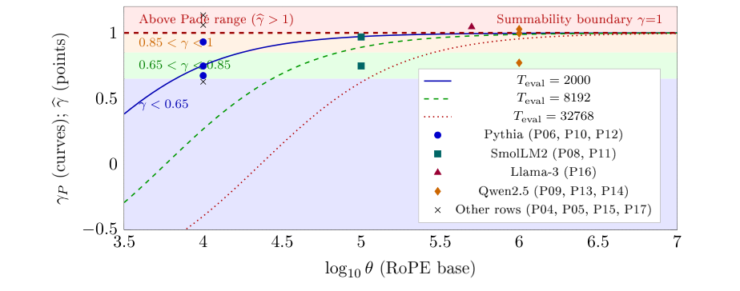
Candidate curves and retained historical fitted exponents. The curves evaluate \(\gamma _P\) at the three displayed contexts. The 13 points use the recorded bases and replayed exponents in Table 8; they are not measurements under a common context or corpus. The shaded bands preserve the old numerical intervals for orientation, without assigning task capability or a safe deployment regime. Points above one cannot be predictions of this candidate. Updated profile evidence is in Section 8.
4 Background and Notation
For real distance \(d{\gt}0\), call plane \(i\) cycled when \(d\omega _i\ge 2\pi \). The legacy symbols \(n_\mathrm {dead}\) and \(n_\mathrm {active}\) denote cycled and uncycled counts, respectively; they do not classify functional usefulness.
↳ Not used by another result of the paper.
Since \(\log \theta {\gt}0\), the threshold is equivalent to \(i\le x=m\log (d/2\pi )/\log \theta \). Among integers \(0,\ldots ,m-1\), the number satisfying this inequality is zero for \(x{\lt}0\), \(1+\lfloor x\rfloor \) for \(0\le x{\lt}m-1\), and \(m\) for \(x\ge m-1\). Clipping combines these cases and includes equality at the threshold. Subtracting from \(m\) gives the uncycled count.
En palabras.
El recuento separa los planos que han completado al menos una vuelta de los que aún no la han completado a una distancia dada. El umbral se calcula con las frecuencias rotatorias reales y se trunca entre cero y \(m\).
Alcance.
Completar una vuelta no significa perder información ni dejar de atender. El laboratorio de la Figura 2 comprueba el recuento exacto frente a la aproximación continua.
🧪 Lab: Figure 2 live: turn the rotary-cycle surface in 3D
Turn the exact uncycled-fraction surface over log distance and log RoPE base. The star marks your values; the flat curve below compares the integer count with its clipped continuous approximation. This counts geometric phase thresholds, not attention decay.
↳ Not used by another result of the paper.
En palabras.
Las tres distancias son coordenadas de referencia distintas. \(2\pi \sqrt\theta \) y \(2\pi \theta \) vienen del recuento continuo; \(\theta /\sqrt2\) es una escala de comparación elegida. Para \(m\) finito, la última vuelta ocurre antes de \(2\pi \theta \).
Alcance.
Ninguna de estas distancias constituye por sí sola un límite de recuperación, de contexto útil o de compresión KV.
🖼️ Figure 2
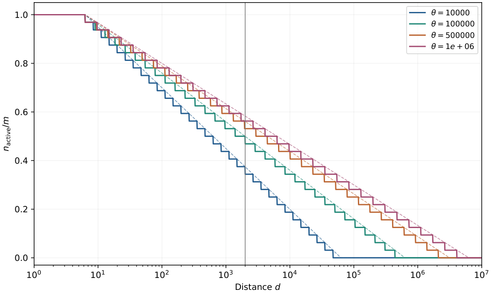
Uncycled fraction for \(m=32\) and four geometric bases. Solid curves use the exact integer count; dashed curves use the clipped continuous approximation. The vertical line marks \(d=2000\). The plotted quantities count phase thresholds and do not measure attention decay or a retrieval ceiling.
🖼️ Figure 3
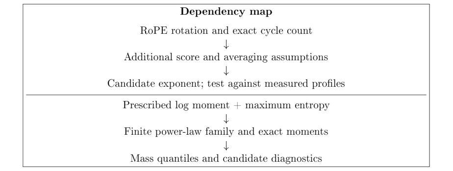
Logical dependencies. The MaxEnt branch starts from a prescribed constraint, not from the cycle count alone. Converting a mass quantile or an inverse parameter into a useful intervention requires separate empirical validation.
|
\(d\) |
\(n_\mathrm {dead}\) |
\(n_\mathrm {active}\) |
\(n_\mathrm {active}/m\) |
|
10 |
2 |
30 |
93.75% |
|
628 |
16 |
16 |
50% |
|
2,000 |
21 |
11 |
34.375% |
|
7,071 |
25 |
7 |
21.875% |
|
62,832 |
32 |
0 |
0% |
Colour: blue shade = the number’s size within its column.
|
\(\theta =10^4\) |
\(\theta =5\times 10^5\) |
\(\theta =10^6\) |
|
|
\(T_\mathrm {cross}\) |
628 |
4,443 |
6,283 |
|
\(d_\mathrm {alias}\) |
7,071 |
353,553 |
707,107 |
|
\(T_{\rm max}\) |
62,832 |
3,141,593 |
6,283,185 |
|
\(T_{\rm last}\) |
47,117 |
2,084,765 |
4,080,185 |
Colour: blue shade = the number’s size within its column.
5 Modelling \(\gamma \): Geometry, Approximations and Empirical Tests
A finite cosine sum of the form
is not automatically a nonnegative normalized attention distribution. In particular, the proposed ratio of logarithms cannot supply the Padé exponent:
↳ Not used by another result of the paper.
For \(r{\gt}0\), \(\log (1/r)=-\log r\), and \(r\ne 1\) makes the denominator nonzero. Also \((2-z)/(2+z){\gt}-1\) for \(z{\gt}0\). A one-term cosine sum is negative when its phase is \(\pi \). These observations block the stated normalization and exponent inference. A stationary-phase argument would require an explicit asymptotic parameter, amplitude hypotheses and a controlled remainder; none is supplied by the finite sum alone.
En palabras.
Una suma finita de cosenos puede ser negativa y no define por sí sola una distribución de atención. Además, el cociente de logaritmos propuesto vale exactamente \(-1\) en su dominio, mientras que el candidato Padé es mayor que \(-1\) para \(z{\gt}0\). La proposición bloquea aquella derivación; no descarta que otra hipótesis sobre puntajes pueda producir una ley de potencias.
Alcance formal.
El paper da una prueba algebraica directa. Este enunciado completo no tiene un enlace Isabelle en este Blueprint.
🧪 Lab: Figure 5 live: turn the historical Padé candidate in 3D
Turn the candidate surface over log RoPE base and log context; the star marks your values. The flat curve below fixes your context. This stipulated formula is not inferred from the cosine sum or validated against a trained model.
🖼️ Figure 4
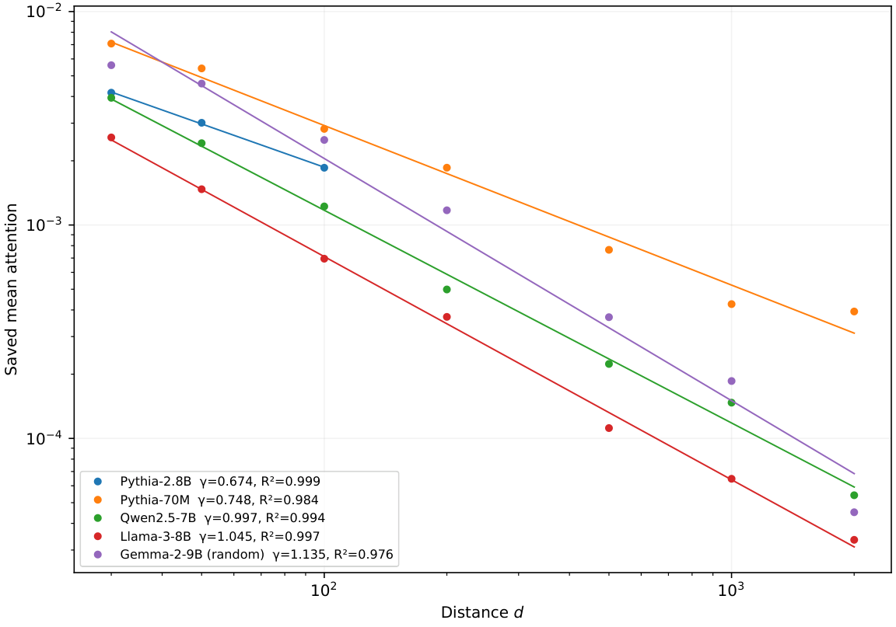
Five representative saved E4 profiles. Points are the means on each record’s declared fitting grid; lines use both slope and intercept from that regression. Pythia-2.8B covers only 30–100. The legend reports each actual \(R^2\); no uniform fit-quality claim is imposed.
🖼️ Figure 5
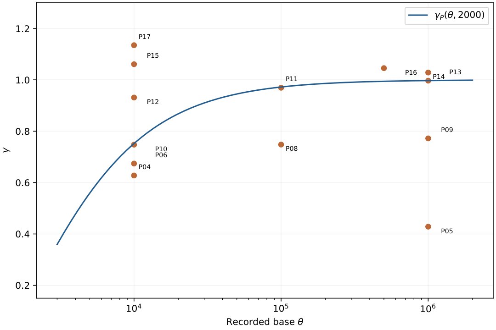
The candidate curve at stipulated \(T=2000\) and 13 observations with recorded base fields. Points use the same IDs as Table 8. A trend across different models is not an intervention on \(\theta \).
🖼️ Figure 6
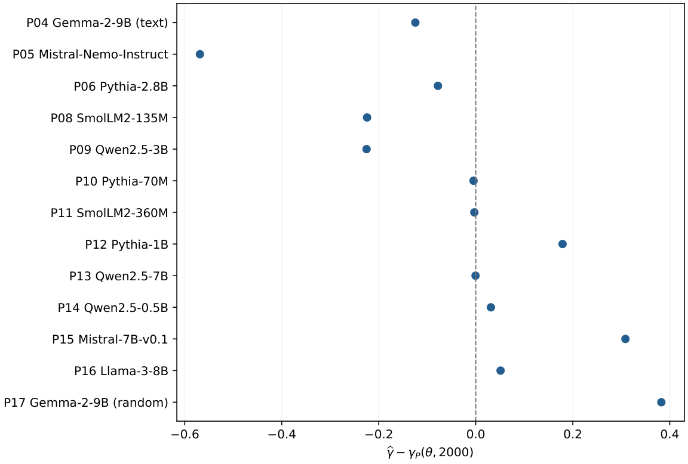
All 13 computable residuals, without excluding poorly predicted observations. Lack of fit is a limitation of the candidate; the residual alone does not identify its cause.
|
Pythia |
\(d_{\rm rot}\) |
\(m\) |
\(\kappa =m/\log \theta \) |
QL [95% CI] |
|
14m |
8 |
4 |
0.434294 |
1.244245 [1.212552, 1.281474] |
|
31m |
8 |
4 |
0.434294 |
1.232606 [1.202567, 1.264370] |
|
70m |
16 |
8 |
0.868589 |
1.173706 [1.147172, 1.199493] |
|
1b |
64 |
32 |
3.474356 |
0.974251 [0.943375, 1.006482] |
|
1.4b |
32 |
16 |
1.737178 |
0.930250 [0.896514, 0.966649] |
|
2.8b |
20 |
10 |
1.085736 |
0.866809 [0.830561, 0.904920] |
Colour: blue shade = the number’s size within its column.
|
Candidate |
Expression |
Relation to \(e^{-z}\) |
|
Linear |
\(1-z\) |
\([1,0]\); \(O(z^2)\) |
|
Exponential |
\(e^{-z}\) |
reference |
|
Padé |
\((2-z)/(2+z)\) |
\([1,1]\); \(O(z^3)\) |
|
Rational |
\(1/(1+z)\) |
\([0,1]\); \(O(z^2)\) |
|
Shorthand |
\(\log (10^4)/\log \theta \) |
no \(T\) dependence |
Colour: red = no / fails.
ID Model \(\theta \) \(\gamma _P\) \(\widehat\gamma \) \(R^2\) residual P01 phi-3-mini (text) — — 0.6296 0.9853 — P04 Gemma-2-9B (text) 10000 0.7522 0.6276 0.9773 -0.1246 P05 Mistral-Nemo-Instruct 1e+06 0.9972 0.4284 0.9224 -0.5687 P06 Pythia-2.8B 10000 0.7522 0.6742 0.9993 -0.0780 P07 Pythia-1.4B — — 0.7051 0.8413 — P08 SmolLM2-135M 100000 0.9721 0.7480 0.9889 -0.2241 P09 Qwen2.5-3B 1e+06 0.9972 0.7720 0.9958 -0.2251 P10 Pythia-70M 10000 0.7522 0.7476 0.9843 -0.0046 P11 SmolLM2-360M 100000 0.9721 0.9692 0.9981 -0.0029 P12 Pythia-1B 10000 0.7522 0.9311 0.9831 +0.1789 P13 Qwen2.5-7B 1e+06 0.9972 0.9967 0.9939 -0.0005 P14 Qwen2.5-0.5B 1e+06 0.9972 1.0284 0.9968 +0.0312 P15 Mistral-7B-v0.1 10000 0.7522 1.0608 0.9987 +0.3085 P16 Llama-3-8B 500000 0.9944 1.0455 0.9975 +0.0511 P17 Gemma-2-9B (random) 10000 0.7522 1.1348 0.9765 +0.3826 P18 phi-3-mini (random) — — 1.0366 0.9779 — P19 Llama-2-7B (Kaggle) — — 1.2108 0.9877 — P20 Llama-2-13B (Kaggle) — — 1.0545 0.9943 —
Colour: grey = nothing; blue shade = the number’s size within its column.
6 Why Power Law: The Maximum Entropy Foundation
Let \(N\ge 1\) be an integer and \(\gamma \in \mathbb R\). Define
Among all probability vectors \(p\) on this support satisfying \(\mathbb E_p[\log d]=\mathbb E_{p_\gamma }[\log d]\), the unique entropy maximizer is \(p_\gamma \). We use counting measure, natural logarithms and \(0\log 0=0\).
Lean · ours, in partshow
Lean demuestra la desigualdad y la igualdad de Gibbs para la familia finita; el enunciado del paper permite cualquier exponente real y N=1, mientras el fichero Lean enlazado trata N>0 y el resultado de existencia se formula para exponente positivo.
✅ Checked when this page was built: MaxEnt.lean compiles with Lean 4.35.0, no errors, no sorry. Axioms — gibbs_le: propext, Classical.choice, Quot.sound.
Reproduce: Lean 4.35.0, Mathlib f0b4c8150aa0; in that Lean project, lake env lean MaxEnt.lean (SHA-256 of the compiled file: 5d78934b6d41f005…; a source page on this site may show it with comments edited, under its own hash).
Trust base: 🔒 kernel only — only part of the statement is formal (see the box). Lean: 1 result, standard axioms only
Cite: Definition 4.1, p. 15, doi:10.5281/zenodo.24379538
🆕 Classical and new: Resultado clásico de máxima entropía con una restricción prescrita; no prueba una ley de entrenamiento.
↳ Used in: Theorem 6.2
The reference vector is strictly positive. Since \(\log p_\gamma (d)=-\gamma \log d-\log Z_N\), the moment and normalization constraints give \(\sum p\log p_\gamma =\sum p_\gamma \log p_\gamma \). Consequently,
Gibbs’ inequality applies also when some entries of \(p\) vanish. Equality holds only for \(p=p_\gamma \). This proves global optimality and uniqueness, rather than only a stationary point of a Lagrangian.
En palabras.
En un soporte finito, si se fija la media de \(\log d\) al valor de una familia de potencias dada, esa familia maximiza de forma única la entropía. La prueba compara la entropía mediante divergencia KL y usa su no negatividad. El momento fijado es una premisa matemática, no una consecuencia de RoPE ni del entrenamiento de un modelo.
Alcance formal.
El argumento está escrito en el paper. Lean verifica la desigualdad de Gibbs para la familia finita; el enunciado completo para todo exponente y \(N=1\) mantiene aquí una prueba escrita, sin certificado formal de igual alcance.
For integer \(N{\gt}1\) and \(0{\lt}\lambda {\lt}\log N\), consider
There is a unique real exponent and a unique maximizing distribution:
The exponent is positive, zero or negative according as \(\lambda \) is below, equal to or above \(\log (N!)/N\). At the endpoints \(\lambda =0\) and \(\lambda =\log N\), the feasible distribution is the point mass at \(1\) or \(N\), respectively, obtained as an exponent limit. For \(N=1\) the distribution is unique but the exponent is unidentifiable.
Lean · ours, in partshow
Lean certifica existencia, unicidad y máximo para 0<lambda<log(N!)/N, con exponente positivo. El paper también afirma los regímenes de exponente cero y negativo y los extremos; esas partes quedan fuera de estos teoremas Lean.
✅ Checked when this page was built: MaxEnt.lean compiles with Lean 4.35.0, no errors, no sorry. Axioms — maxent_power_law, gamma_unique: propext, Classical.choice, Quot.sound.
Reproduce: Lean 4.35.0, Mathlib f0b4c8150aa0; in that Lean project, lake env lean MaxEnt.lean (SHA-256 of the compiled file: 5d78934b6d41f005…; a source page on this site may show it with comments edited, under its own hash).
Trust base: 🔒 kernel only — only part of the statement is formal (see the box). Lean: 2 results, standard axioms only
Proof: in this note·Formalized: Lean 4, by the author (public formalizations repository)·Covers: part: Lean certifica existencia, unicidad y máximo para 0<lambda<log(N!)/N, con exponente positivo. El paper también afirma los regímenes de exponente cero y negativo y los extremos; esas partes quedan fuera de estos teoremas Lean.·Cite: Theorem 6.2, p. 28, doi:10.5281/zenodo.24379538
🆕 Classical and new: Aplicación explícita de Gibbs y del orden estricto del momento; resultado matemático condicional.
↳ Not used by another result of the paper.
The Lagrangian \(\mathcal L=H(p)-\mu (\sum p-1)-\gamma (\sum p\log d-\lambda )\) has stationary equation \(-\log p(d)-1-\mu -\gamma \log d=0\). Normalization gives the displayed family. To establish existence of the required exponent, define \(U_N(\gamma )=\mathbb E_{p_\gamma }[\log d]\). Finite-sum differentiation gives
Strict negativity follows because all probabilities are positive and \(\log d\) is nonconstant for \(N{\gt}1\). As \(\gamma \to +\infty \), mass concentrates at \(1\) and \(U_N\to 0\); as \(\gamma \to -\infty \), it concentrates at \(N\) and \(U_N\to \log N\). Continuity and strict monotonicity establish existence, uniqueness and the sign condition. The preceding Gibbs argument then proves global optimality over all feasible vectors, including their boundary.
En palabras.
Para un momento logdistancia interior, existe exactamente un exponente de la familia finita que lo realiza. La derivada del momento es menos una varianza estrictamente positiva, lo que da el orden y la unicidad; el argumento de Gibbs del teorema precedente da la optimalidad global. Los extremos requieren límites de exponentes y, si \(N=1\), el exponente no se puede identificar.
Alcance formal.
Lean verifica existencia, unicidad y óptimo para el momento interior que da exponente positivo. Los regímenes de exponente cero o negativo y los extremos del enunciado completo siguen demostrados en el manuscrito.
|
Quantity |
Formula |
Scope |
|
Inverse temperature |
\(\gamma \) |
Family parameter, not a measured physical temperature. |
|
Temperature |
\(1/\gamma \) |
Defined for \(\gamma \ne 0\); increasing positive \(\gamma \) favors shorter distances. |
|
Partition function |
\(\sum _{d=1}^N d^{-\gamma }\) |
Finite for every finite \(N\); the infinite sum converges only for \(\gamma {\gt}1\). |
|
Heat capacity |
\(-\gamma ^2 U_N'(\gamma )\) |
A finite-family susceptibility, not task sensitivity. |
7 Finite Power-Law Families and Infinite-Support Limits
Let \(N{\gt}1\) and let \(p_c(x)=1/(x\log N)\) be a probability density on \([1,N]\) with respect to Lebesgue measure. Then
Lean · ours, in partshow
Lean comprueba la identidad algebraica L²/3−(L/2)²=L²/12; la transformación de la densidad continua a uniforme y el cálculo de los dos momentos siguen demostrados en el texto.
✅ Checked when this page was built: HeatCapacity.lean compiles with Lean 4.35.0, no errors, no sorry. Axioms — var_log_d_identity: propext, Classical.choice, Quot.sound.
Reproduce: Lean 4.35.0, Mathlib f0b4c8150aa0; in that Lean project, lake env lean HeatCapacity.lean (SHA-256 of the compiled file: b9789e37fc15f362…; a source page on this site may show it with comments edited, under its own hash).
Trust base: 🔒 kernel only — only part of the statement is formal (see the box). Lean: 1 result, standard axioms only
Proof: in this note·Formalized: Lean 4, by the author (public formalizations repository)·Covers: part: Lean comprueba la identidad algebraica L²/3−(L/2)²=L²/12; la transformación de la densidad continua a uniforme y el cálculo de los dos momentos siguen demostrados en el texto.·Cite: Theorem 7.1, p. 31, doi:10.5281/zenodo.24379538
↳ Not used by another result of the paper.
Write \(L=\log N\). The change of variable \(y=\log x\), with \(\mathrm dy=\mathrm dx/x\), maps the density to the uniform distribution on \([0,L]\). Direct integration gives
Subtracting the square of the first moment from the second gives \(L^2/3-L^2/4=L^2/12\). This calculation concerns the continuous density, not harmonic probabilities on integer distances.
En palabras.
Para la densidad continua \(1/(x\log N)\), el cambio \(y=\log x\) produce una uniforme en \([0,\log N]\). Su varianza es \((\log N)^2/12\). Esta cuenta continua difiere de la varianza de las distancias enteras y no establece una transición de fase en un transformer.
Alcance formal.
Lean verifica la identidad algebraica de los dos momentos. La transformación de la densidad y las integrales continuas se demuestran en el manuscrito.
For integer \(N{\gt}1\) and the discrete family \(p_\gamma \), define \(S_\gamma (N)=-\sum p_\gamma \log p_\gamma \).
For every real \(\gamma \), \(0\le S_\gamma (N)\le \log N\), with equality in the upper bound exactly at \(\gamma =0\). For \(N=1\) the entropy is zero for every exponent.
For fixed \(0{\lt}\gamma {\lt}1\), as \(N\to \infty \),
\begin{equation} S_\gamma (N)=\log N-\log (1-\gamma )-\frac{\gamma }{1-\gamma } +O(N^{\gamma -1}\log N). \end{equation}12At \(\gamma =1\), \(S_1(N)=\tfrac 12\log N+\log \log N-\gamma _E/2+o(1)\). This is a separate asymptotic regime, not substitution into the preceding fixed-exponent formula.
For fixed \(\gamma {\gt}1\), \(S_\gamma (N)\to \log \zeta (\gamma )-\gamma \zeta '(\gamma )/\zeta (\gamma ){\lt}\infty \).
Lean · ours, in partshow
Lean demuestra la cota superior finita y su caso de igualdad para distribuciones en un alfabeto finito; los tres regímenes asintóticos del teorema no están formalizados ahí.
✅ Checked when this page was built: EntropyBound.lean compiles with Lean 4.35.0, no errors, no sorry. Axioms — entropy_le_log_card, entropy_eq_log_card_iff: propext, Classical.choice, Quot.sound.
Reproduce: Lean 4.35.0, Mathlib f0b4c8150aa0; in that Lean project, lake env lean EntropyBound.lean (SHA-256 of the compiled file: e0abf82c9a53cede…; a source page on this site may show it with comments edited, under its own hash).
Trust base: 🔒 kernel only — only part of the statement is formal (see the box). Lean: 2 results, standard axioms only
Proof: in this note·Formalized: Lean 4, by the author (public formalizations repository)·Covers: part: Lean demuestra la cota superior finita y su caso de igualdad para distribuciones en un alfabeto finito; los tres regímenes asintóticos del teorema no están formalizados ahí.·Cite: Theorem 7.2, p. 32, doi:10.5281/zenodo.24379538
↳ Not used by another result of the paper.
The first part is the finite-alphabet Shannon bound, with equality only at the uniform vector. For \(N{\gt}1\), the power-law vector is uniform exactly when \(\gamma =0\). For the second part, integral comparison (or Euler–Maclaurin with fixed exponent) gives \(Z_N=N^{1-\gamma }/(1-\gamma )+O(1)\) and \(U_N=\log N-1/(1-\gamma )+O(N^{\gamma -1}\log N)\). Substitute into \(S=\log Z_N+\gamma U_N\). At one, \(H_N=\log N+\gamma _E+O(N^{-1})\) and \(\sum _{d\le N}\log d/d=\tfrac 12(\log N)^2+O(1)\) yield the stated separate expansion. Above one, both \(\sum d^{-\gamma }\) and \(\sum d^{-\gamma }\log d\) converge, giving the zeta expression. The fixed-exponent remainder bounds are not uniform as \(\gamma \to 1\).
En palabras.
La entropía de una distribución sobre \(N\) distancias no supera \(\log N\). La familia de potencias tiene además tres regímenes asintóticos distintos: exponente fijo menor que uno, igual a uno y mayor que uno. La fórmula del primer régimen no se puede sustituir directamente en uno porque su resto no es uniforme al acercarse a ese punto.
Alcance formal.
Lean verifica la cota finita y su igualdad uniforme; las tres expansiones asintóticas se demuestran en el manuscrito. Ninguna es una medición de modelos.
At \(\lambda =0,\gamma =1\), \(Z_N=H_N\sim \log N\). The other cases are
Cite: Definition 7.3, p. 33, doi:10.5281/zenodo.24379538
↳ Not used by another result of the paper.
En palabras.
La definición clasifica cuándo converge el normalizador de una familia de potencias con posible corte exponencial en soporte infinito. Con corte positivo converge para todo exponente; sin corte, el umbral de sumabilidad está en uno.
Alcance.
Son casos de una distribución matemática. No clasifican automáticamente arquitecturas ni prueban una transición de fase en modelos entrenados.
8 Protocol-Specific Exponents and Derived Family Coordinates
No numbered statement in this section.
Its figures and tables are below; its text is in the paper, p. 34.
🖼️ Figure 7
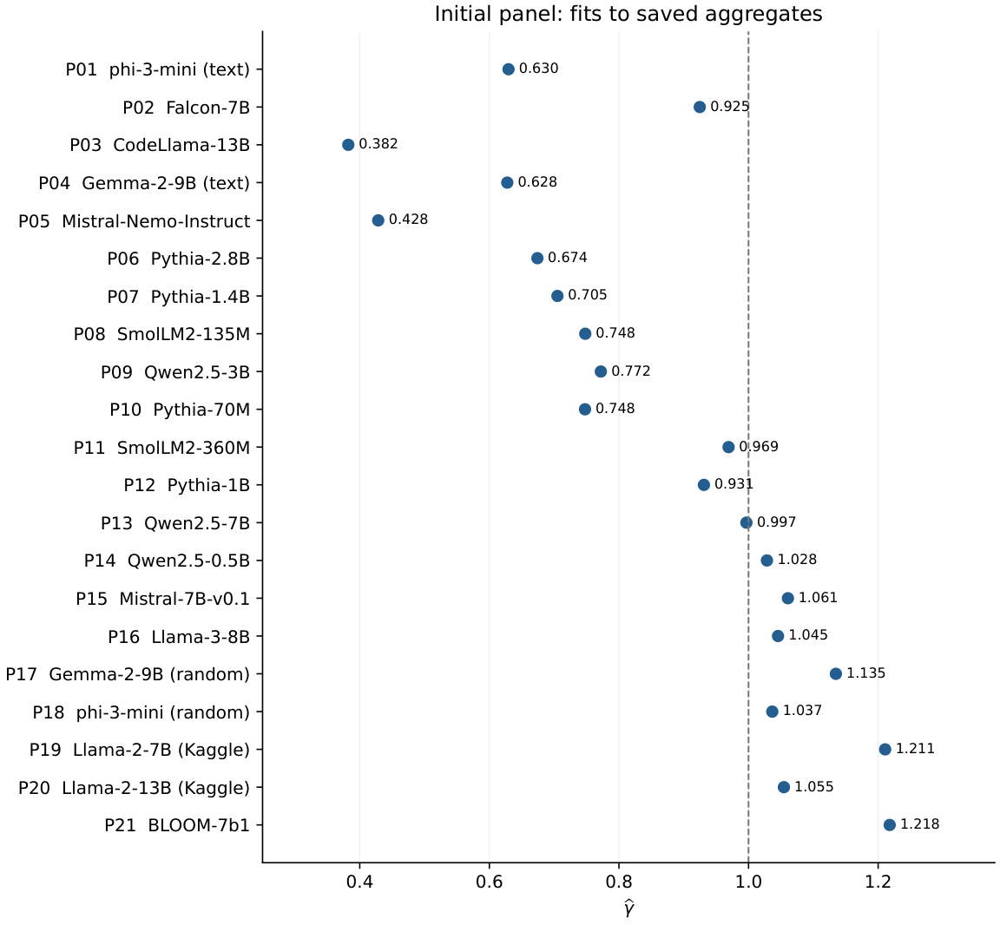
The 21 initial panel entries, using the exact estimates of Table 10. The dashed line is the mathematical infinite-support summability boundary \(\gamma =1\). It is not a measured phase transition in a network. No missing or approximate exponent is replaced by zero.
🖼️ Figure 8
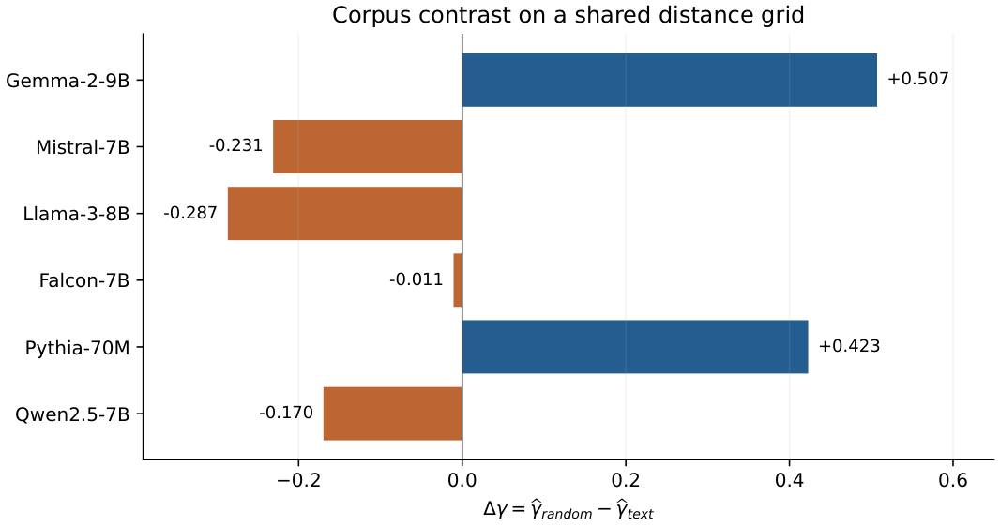
Six corpus contrasts recomputed from saved means on a common within-pair grid. Falcon uses 30–1000; the other five pairs use 30–2000. The two formerly absent random-corpus points have saved data: Pythia-70M gives \(+0.422912\) and Qwen2.5-7B gives \(-0.169680\). The bars are point estimates, without an inferred mechanism or an uncomputed confidence interval.
🖼️ Figure 9
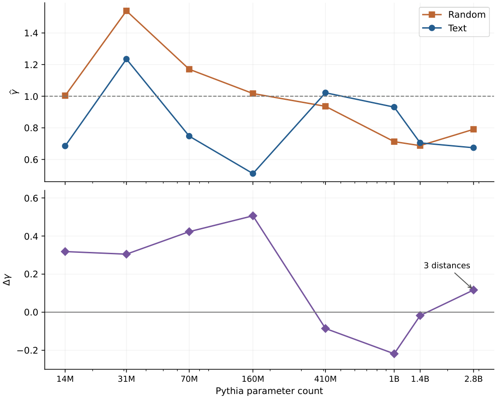
Pythia estimates and corpus contrasts on matched within-pair distance grids. The last point uses three distances, all others seven. The lines guide the eye; no induction-head labels or mechanistic threshold are inferred from the sign.
🖼️ Figure 10
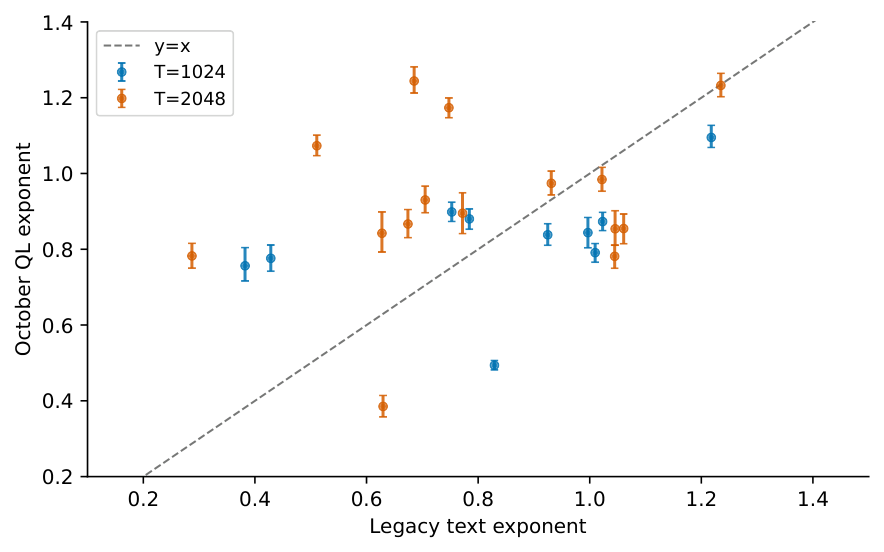
Historical text exponents against October QL fits. Error bars are the archived bootstrap intervals, reproduced from sequence profiles. The diagonal denotes equality; colors distinguish context length. Changes in corpus and protocol prevent interpreting disagreement as a causal estimate of one instrumental bias.
🖼️ Figure 11
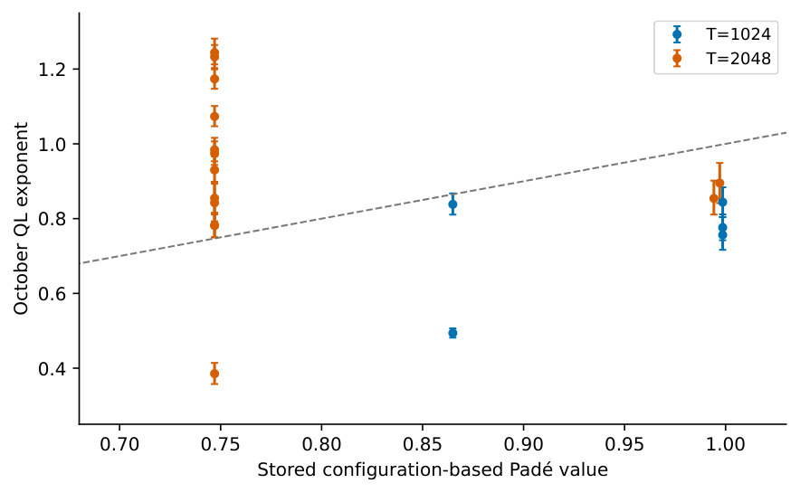
Nineteen stored configuration-based Padé values against QL fits. This analysis checks the stored comparison, not every model’s original immutable configuration. The plot does not validate Padé as a predictor.
|
ID |
Model |
\(\widehat\gamma \) |
\(R^2\) |
Range / \(n\) |
\(\widehat\gamma _0\) |
excess |
|
P01 |
phi-3-mini (text) |
0.629563 |
0.985314 |
30–1000 / 6 |
0.741726 |
-0.112163 |
|
P02 |
Falcon-7B |
0.924685 |
0.989728 |
30–1000 / 6 |
0.741726 |
+0.182958 |
|
P03 |
CodeLlama-13B |
0.382302 |
0.928789 |
30–2000 / 7 |
0.782582 |
-0.400280 |
|
P04 |
Gemma-2-9B (text) |
0.627646 |
0.977314 |
30–2000 / 7 |
0.782582 |
-0.154936 |
|
P05 |
Mistral-Nemo-Instruct |
0.428448 |
0.922354 |
20–1000 / 7 |
0.698299 |
-0.269851 |
|
P06 |
Pythia-2.8B |
0.674162 |
0.999287 |
30–100 / 3 |
0.525737 |
+0.148425 |
|
P07 |
Pythia-1.4B |
0.705073 |
0.841258 |
30–2000 / 7 |
0.782582 |
-0.077510 |
|
P08 |
SmolLM2-135M |
0.747996 |
0.988937 |
30–2000 / 7 |
0.782582 |
-0.034586 |
|
P09 |
Qwen2.5-3B |
0.772033 |
0.995841 |
30–2000 / 7 |
0.782582 |
-0.010549 |
|
P10 |
Pythia-70M |
0.747602 |
0.984269 |
30–2000 / 7 |
0.782582 |
-0.034981 |
|
P11 |
SmolLM2-360M |
0.969173 |
0.998139 |
30–2000 / 7 |
0.782582 |
+0.186590 |
|
P12 |
Pythia-1B |
0.931108 |
0.983104 |
30–2000 / 7 |
0.782582 |
+0.148526 |
|
P13 |
Qwen2.5-7B |
0.996695 |
0.993942 |
30–2000 / 7 |
0.782582 |
+0.214113 |
|
P14 |
Qwen2.5-0.5B |
1.028374 |
0.996775 |
30–2000 / 7 |
0.782582 |
+0.245792 |
|
P15 |
Mistral-7B-v0.1 |
1.060750 |
0.998690 |
30–2000 / 7 |
0.782582 |
+0.278168 |
|
P16 |
Llama-3-8B |
1.045476 |
0.997461 |
30–2000 / 7 |
0.782582 |
+0.262894 |
|
P17 |
Gemma-2-9B (random) |
1.134796 |
0.976472 |
30–2000 / 7 |
0.782582 |
+0.352214 |
|
P18 |
phi-3-mini (random) |
1.036602 |
0.977923 |
30–1000 / 6 |
0.741726 |
+0.294876 |
|
P19 |
Llama-2-7B (Kaggle) |
1.210761 |
0.987709 |
30–1000 / 6 |
0.741726 |
+0.469035 |
|
P20 |
Llama-2-13B (Kaggle) |
1.054530 |
0.994348 |
30–1000 / 6 |
0.741726 |
+0.312804 |
|
P21 |
BLOOM-7b1 |
1.217824 |
0.997330 |
30–2000 / 7 |
0.782582 |
+0.435242 |
Colour: blue shade = the number’s size within its column.
|
ID |
\(T_{\rm attn}\) |
\(U\) |
\(S\) |
\(C_V\) |
\(I\) |
\(\chi \) |
|
P01 |
1.5884 |
5.3149 |
7.1060 |
1.4730 |
3.7163 |
2.6995 |
|
P02 |
1.0814 |
3.9348 |
6.0208 |
4.6217 |
5.4052 |
13.2775 |
|
P03 |
2.6157 |
6.0337 |
7.4775 |
0.3204 |
2.1922 |
1.6189 |
|
P04 |
1.5933 |
5.3220 |
7.1105 |
1.4586 |
3.7027 |
2.6856 |
|
P05 |
2.3340 |
5.9271 |
7.4343 |
0.4461 |
2.4302 |
1.7496 |
|
P06 |
1.4833 |
5.1421 |
6.9933 |
1.8335 |
4.0342 |
3.0690 |
|
P07 |
1.4183 |
5.0140 |
6.9050 |
2.1142 |
4.2528 |
3.3907 |
|
P08 |
1.3369 |
4.8251 |
6.7677 |
2.5437 |
4.5465 |
3.9682 |
|
P09 |
1.2953 |
4.7139 |
6.6832 |
2.8027 |
4.7023 |
4.3866 |
|
P10 |
1.3376 |
4.8269 |
6.7690 |
2.5396 |
4.5439 |
3.9620 |
|
P11 |
1.0318 |
3.6925 |
5.7914 |
5.1444 |
5.4768 |
32.4387 |
|
P12 |
1.0740 |
3.9000 |
5.9886 |
4.6989 |
5.4199 |
14.5154 |
|
P13 |
1.0033 |
3.5416 |
5.6430 |
5.4488 |
5.4850 |
302.6061 |
|
P14 |
0.9724 |
3.3681 |
5.4674 |
5.7740 |
5.4598 |
35.2435 |
|
P15 |
0.9427 |
3.1923 |
5.2837 |
6.0720 |
5.3964 |
16.4608 |
|
P16 |
0.9565 |
3.2750 |
5.3708 |
5.9361 |
5.4310 |
21.9895 |
|
P17 |
0.8812 |
2.8018 |
4.8552 |
6.5951 |
5.1213 |
7.4186 |
|
P18 |
0.9647 |
3.3232 |
5.4211 |
5.8533 |
5.4472 |
27.3206 |
|
P19 |
0.8259 |
2.4284 |
4.4175 |
6.8753 |
4.6900 |
4.7447 |
|
P20 |
0.9483 |
3.2259 |
5.3193 |
6.0178 |
5.4115 |
18.3384 |
|
P21 |
0.8211 |
2.3954 |
4.3775 |
6.8881 |
4.6444 |
4.5909 |
Colour: blue shade = the number’s size within its column.
|
Model |
QL exponent [95% CI] |
T |
Precision |
|
Llama-2-7b-hf |
0.782 [0.750, 0.816] |
2048 |
bf16 |
|
CodeLlama-13b-Instruct-hf |
0.756 [0.716, 0.804] |
1024 |
bf16 |
|
Mistral-Nemo-Instruct-2407 |
0.776 [0.742, 0.811] |
1024 |
bf16 |
|
pythia-160m |
1.073 [1.047, 1.101] |
2048 |
fp32 |
|
gemma-2-9b-it |
0.842 [0.793, 0.899] |
2048 |
bf16 |
|
phi-3-mini-4k-instruct |
0.385 [0.358, 0.414] |
2048 |
bf16 |
|
pythia-2.8b |
0.867 [0.831, 0.905] |
2048 |
fp32 |
|
pythia-14m |
1.244 [1.213, 1.281] |
2048 |
fp32 |
|
pythia-1.4b |
0.930 [0.897, 0.967] |
2048 |
fp32 |
|
pythia-70m |
1.174 [1.147, 1.199] |
2048 |
fp32 |
|
gpt2-large |
0.899 [0.873, 0.924] |
1024 |
fp32 |
|
Qwen2.5-3B |
0.895 [0.841, 0.949] |
2048 |
bf16 |
|
gpt2-medium |
0.880 [0.853, 0.906] |
1024 |
fp32 |
|
OLMo-7B-hf |
0.494 [0.482, 0.506] |
1024 |
bf16 |
|
falcon-7b |
0.838 [0.811, 0.867] |
1024 |
bf16 |
|
pythia-1b |
0.974 [0.943, 1.006] |
2048 |
fp32 |
|
Qwen2.5-7B |
0.844 [0.804, 0.884] |
1024 |
bf16 |
|
gpt2-xl |
0.791 [0.766, 0.815] |
1024 |
fp32 |
|
pythia-410m |
0.984 [0.953, 1.016] |
2048 |
fp32 |
|
gpt2 |
0.873 [0.849, 0.898] |
1024 |
fp32 |
|
phi-2 |
0.782 [0.750, 0.811] |
2048 |
bf16 |
|
Meta-Llama-3-8B |
0.854 [0.811, 0.902] |
2048 |
bf16 |
|
Mistral-7B-v0.1 |
0.855 [0.815, 0.893] |
2048 |
bf16 |
|
bloom-7b1 |
1.095 [1.069, 1.127] |
1024 |
bf16 |
|
pythia-31m |
1.233 [1.203, 1.264] |
2048 |
fp32 |
9 Diagnostic Workflow and Instrument Controls
No numbered statement in this section.
Its figures and tables are below; its text is in the paper, p. 44.
|
Grid |
\(\widehat\gamma _0\) |
\(R^2\) |
|
30–2000 (7 points) |
0.782582 |
0.988452 |
|
30–1000 (6 points) |
0.741726 |
0.987211 |
|
10–2000 (8 points) |
0.681834 |
0.964115 |
|
30–100 (3 points) |
0.525737 |
0.993818 |
|
10–100 (4 points) |
0.396753 |
0.968315 |
|
200–2000 (4 points) |
0.913768 |
0.999228 |
Colour: blue shade = the number’s size within its column.
|
Historical entry |
\(\widehat\gamma \) |
KL |
|
Gemma-2-9B (random) |
1.135 |
0.075 |
|
Mistral-7B-v0.1 |
1.061 |
0.041 |
|
LLaMA-3-8B |
1.046 |
0.018 |
|
LLaMA-2-7B (reported fp16) |
1.026 |
0.002 |
|
Qwen2.5-7B |
0.997 |
0.011 |
|
Pythia-1B |
0.931 |
0.004 |
|
Pythia-70M |
0.748 |
0.008 |
|
Pythia-2.8B |
0.674 |
0.001 |
|
SmolLM2-135M (older pair summary) |
0.902 |
0.009 |
Colour: blue shade = the number’s size within its column.
10 Layer Heterogeneity and the Proposed Critical Layer
For \(\theta {\gt}1\), \(T{\gt}0\), \(N_L\) layers and head dimension \(d_{\rm head}{\gt}0\), define
This is the historical configuration proposal previously denoted \(L_{\rm crit}\). Its full-head factor also ignores partial RoPE: Pythia-1B has \(d_{\rm head}=256\) but \(d_{\rm rot}=64\). Replacing one by the other would define a new candidate, not validate the old formula. Its value need not be an integer or lie in \([0,N_L]\); rounding and any clipping must be stated before comparing it to a measured layer index.
Cite: Definition 10.1, p. 48, doi:10.5281/zenodo.24379538
↳ Not used by another result of the paper.
En palabras.
\(L_{\rm pred}\) conserva una propuesta histórica de coordenada de capa como fórmula candidata. Usa la dimensión completa del head, aunque algunas arquitecturas rotan solo una parte.
Alcance.
No se ha validado como frontera de capa. Puede quedar fuera del intervalo de capas o no ser entero; cualquier redondeo o recorte debe declararse.
|
Model |
\(N_L\) |
reported \(L_{\rm crit}\) |
\(\alpha \) |
old prediction |
old fit |
|
Pythia-70M |
6 |
4 |
.667 |
.748 |
.748 |
|
Pythia-1B |
16 |
15 |
.938 |
.931 |
.931 |
|
GPT2-medium |
24 |
23 |
.958 |
— |
— |
|
GPT2-large |
36 |
35 |
.972 |
— |
— |
Colour: grey = nothing; blue shade = the number’s size within its column.
11 KV-Cache Compression: Mass Budgets and Recorded Tests
For density proportional to \(d^{-g}\) on \([1,N]\), \(N{\gt}1\), and \(0{\lt}f{\lt}1\), the unique \(f\)-mass quantile is
For token distances \(\{ 1,\ldots ,N\} \) with counting measure, the corresponding exact quantile is instead \(D_{f,N}=\min \{ k:\sum _{d=1}^k d^{-g}\ge f\sum _{d=1}^N d^{-g}\} \). For the discrete case \(N\) is an integer. Both quantiles are defined for every finite real \(g\); they do not include a self key at \(d=0\) or a separately modelled attention sink.
Proof: in this note·Covers: not formalized·Cite: Theorem 11.1, p. 50, doi:10.5281/zenodo.24379538
↳ Not used by another result of the paper.
For \(g\ne 1\), dividing \(\int _1^D d^{-g}\, \mathrm{d}d\) by \(\int _1^N d^{-g}\, \mathrm{d}d\) gives \((D^{1-g}-1)/(N^{1-g}-1)\); both integrals contain the factor \(1/(1-g)\). Equating this ratio to \(f\) yields the stated formula. At \(g=1\), the ratio is \(\log D/\log N\). In either case the cumulative density is strictly increasing. On the discrete support, partial sums increase strictly and the smallest index meeting the mass condition is unique.
En palabras.
En la densidad continua proporcional a \(d^{-g}\) sobre \([1,N]\), integrar y resolver la masa acumulada da un cuantil explícito, con el caso \(g=1\) igual a \(N^f\). Para distancias enteras, el cuantil exacto es el primer índice cuya suma parcial alcanza la fracción pedida. Los dos cuantiles no son intercambiables y ninguno garantiza precisión en una tarea KV.
Alcance formal.
La prueba analítica figura en el paper; la ficha no atribuye una prueba Isabelle de toda la fórmula continua ni de rendimiento del modelo.
🧪 Lab: Figure 12 live: continuous and integer mass windows
Recompute both quantiles of the finite power family; the integer one is a partial-sum threshold.
🖼️ Figure 12
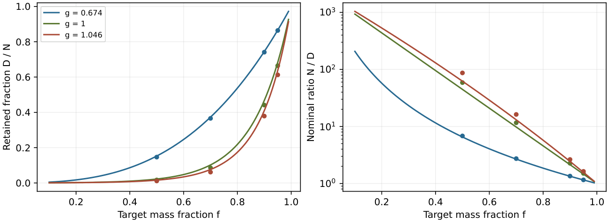
Family calculations on \(N=2000\): continuous quantiles (lines) and discrete token-distance quantiles (markers). The inputs are illustrative exponents, not calibrated model policies. The continuous quantile is smooth through \(g=1\); the discrete quantile is integer-valued and can have steps. Neither has a special task-accuracy threshold there.
|
Historical input |
\(g\) |
\(D_{.9,c}\) |
\(D_{.9,N}\) |
\(D_{.5,c}\) |
\(D_{.5,N}\) |
|
LLaMA-2-7B |
1.026 |
870.9 |
813 |
37.1 |
27 |
|
Pythia-2.8B |
0.674 |
1489.5 |
1482 |
305.5 |
293 |
|
Pythia-70M |
0.748 |
1404.2 |
1392 |
220.4 |
205 |
|
SmolLM2-135M (older input) |
0.902 |
1153.3 |
1121 |
89.3 |
74 |
|
Pythia-1B |
0.931 |
1093.4 |
1056 |
73.2 |
59 |
|
Qwen2.5-7B |
0.997 |
942.5 |
891 |
45.7 |
34 |
|
LLaMA-3-8B |
1.046 |
820.2 |
758 |
32.1 |
23 |
Colour: blue shade = the number’s size within its column.
|
Model |
\(g\) |
tested \(W\) |
full PPL |
\(\Delta \)PPL(\(W\)) |
\(\Delta \)PPL(1024) |
|
pythia-1b |
0.931 |
445 |
11.7956 |
+1.4443 |
-0.1433 |
|
pythia-2.8b |
0.674 |
1482 |
9.2421 |
-0.5141 |
-0.0126 |
|
Model |
\(g\) |
tested \(W\) |
\(W/N\) |
\(\Delta \)PPL |
stored knee |
|
pythia-14m |
0.685 |
1466 |
71.6% |
+4.3765 |
1280 |
|
pythia-70m |
0.748 |
1348 |
65.8% |
-1.1329 |
1024 |
|
pythia-160m |
0.511 |
1651 |
80.6% |
+1.4443 |
1024 |
|
pythia-410m |
1.022 |
2048 |
100.0% |
+0.0000 |
768 |
|
pythia-1b |
0.931 |
445 |
21.7% |
+0.9997 |
768 |
|
pythia-1.4b |
0.705 |
1433 |
70.0% |
-0.1715 |
768 |
|
pythia-2.8b |
0.674 |
1482 |
72.4% |
-0.3408 |
768 |
Colour: blue shade = the number’s size within its column.
|
Model |
\(g\) |
\(h\) |
baseline |
hard cutoff |
soft |
hard \(D_f\) |
|
pythia-2.8b |
0.674 |
2754 |
113.533 |
120.232 |
118.843 |
120.910 |
|
pythia-1.4b |
0.705 |
2447 |
53.657 |
31.655 |
25.161 |
48.386 |
|
pythia-1b |
0.931 |
505 |
79.087 |
25.261 |
26.721 |
19.955 |
Colour: blue shade = the number’s size within its column.
|
Pythia |
Q heads |
\(d_{\rm head}\) |
rotary dims |
rotary pairs |
cycled pairs |
|
70m |
8 |
64 |
16 |
8 |
6 |
|
1b |
8 |
256 |
64 |
32 |
21 |
|
1.4b |
16 |
128 |
32 |
16 |
11 |
|
2.8b |
32 |
80 |
20 |
10 |
7 |
Colour: blue shade = the number’s size within its column.
|
v2 model |
\(L_{\rm prune}\) |
Q/K % |
PPL |
\(\Delta \)PPL |
accuracy |
\(\Delta \)acc. |
|
pythia-1b base |
— |
0.000 |
14.9736 |
0 |
0.570 |
0 |
|
pythia-1b |
11 |
9.033 |
16.5365 |
+1.5629 |
0.405 |
-0.165 |
|
pythia-1b |
13 |
5.420 |
15.5490 |
+0.5753 |
0.550 |
-0.020 |
|
pythia-1b |
15 |
1.807 |
15.1637 |
+0.1901 |
0.540 |
-0.030 |
|
pythia-1b |
16 |
0.000 |
14.9736 |
+0.0000 |
0.570 |
+0.000 |
|
pythia-2.8b base |
— |
0.000 |
11.4973 |
0 |
0.615 |
0 |
|
pythia-2.8b |
17 |
12.891 |
14.0789 |
+2.5816 |
0.425 |
-0.190 |
|
pythia-2.8b |
19 |
11.172 |
13.2943 |
+1.7969 |
0.485 |
-0.130 |
|
pythia-2.8b |
21 |
9.453 |
12.8873 |
+1.3899 |
0.475 |
-0.140 |
|
pythia-2.8b |
23 |
7.734 |
12.4181 |
+0.9207 |
0.530 |
-0.085 |
Colour: grey = nothing; blue shade = the number’s size within its column.
|
Selected data |
\(n\) |
OLS slope |
intercept |
\(r\) |
origin slope |
|
1B v1, positive points |
2 |
0.106627 |
-0.002562 |
1.000000 |
0.106060 |
|
1b v2, positive points |
3 |
0.189964 |
-0.253495 |
0.969389 |
0.153883 |
|
1B v2, including no-op |
4 |
0.168560 |
-0.103117 |
0.969777 |
0.153883 |
|
2.8b v2, positive points |
4 |
0.313581 |
-1.561517 |
0.988316 |
0.167242 |
Colour: blue shade = the number’s size within its column.
12 Context Extension: Inverse-Candidate Algebra and Empirical Tests
No numbered statement in this section.
Its figures and tables are below; its text is in the paper, p. 57.
|
\(g\) |
\(\theta _{\rm design}\) at \(T=4096\) |
\(\theta _{\rm design}\) at \(T=8192\) |
|
0.50 |
8,689 |
17,378 |
|
0.65 |
13,654 |
27,308 |
|
0.75 |
20,274 |
40,548 |
|
0.85 |
35,721 |
71,442 |
|
0.95 |
112,956 |
225,912 |
Colour: blue shade = the number’s size within its column.
13 Coordinate Ablations and the Limits of Band Interpretation
Let \(d_{\rm rot}=2m\) be the rotary dimension of a head. In the inspected NeoX basis, plane \(k\) contains coordinates \((k,k+m)\), \(0\leq k{\lt}m\); coordinates \(d_{\rm rot},\ldots ,d_{\rm head}-1\) bypass rotation. A complete-cycle classification at \(T\) uses the actual frequencies and the condition \(T\omega _k\geq 2\pi \). It is a geometric count, not a measure of information, usefulness or semantic function. The words zero_dead and zero_alive below identify archived conditions only.
Cite: Definition 13.1, p. 60, doi:10.5281/zenodo.24379538
↳ Not used by another result of the paper.
En palabras.
En la base NeoX inspeccionada, un plano rotatorio reúne las coordenadas \((k,k+m)\); el resto del head evita la rotación. El criterio de ciclo usa las frecuencias efectivas.
Alcance.
El recuento es geométrico. Los nombres de los experimentos archivados no prueban una partición semántica; la máscara B3 no eliminaba planos intactos complementarios.
🖼️ Figure 13
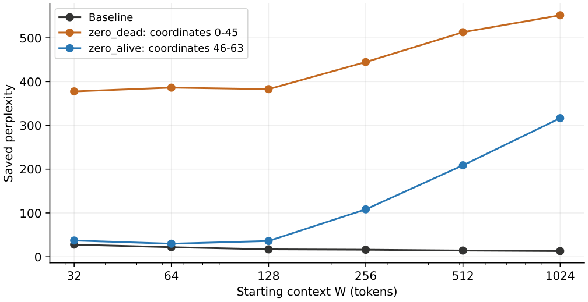
Full saved B3v2 window sweep. The curve labels identify coordinate masks, not semantic or positional channels. Points come from aggregate records; no uncertainty bars can be reconstructed from those aggregates.
|
Starting \(W\) |
baseline |
zero_dead |
zero_alive |
|
32 |
27.743402 |
377.737390 |
37.088815 |
|
64 |
21.773069 |
386.347909 |
29.763744 |
|
128 |
16.954068 |
382.877404 |
35.995311 |
|
256 |
16.020234 |
444.796639 |
108.266915 |
|
512 |
14.211691 |
512.998765 |
208.897918 |
|
1024 |
12.960886 |
551.712647 |
316.583773 |
Colour: blue shade = the number’s size within its column.
|
Model |
\(\theta \) |
cutoff |
old fit |
\(g(0)\) |
\(g(2)\) |
\(g(3)\) |
candidate |
|
Pythia-70M |
10K |
23 |
.748 |
.113 |
.484 |
.685 |
.752 |
|
Pythia-160M |
10K |
23 |
.511 |
.118 |
.474 |
.648 |
.752 |
|
Pythia-1B |
10K |
91 |
.931 |
.120 |
.423 |
.549 |
.752 |
|
SmolLM2-360M |
100K |
18 |
.969 |
.059 |
.210 |
.257 |
.972 |
|
Qwen2.5-0.5B |
1M |
15 |
1.028 |
.043 |
.218 |
.282 |
.997 |
Colour: blue shade = the number’s size within its column.
|
\(\alpha \) |
measured fit |
\(R^2\) |
score simulation |
|
1 |
0.769227 |
0.986052 |
0.33 |
|
2 |
0.727302 |
0.981538 |
0.48 |
|
3 |
0.667649 |
0.971580 |
0.69 |
|
5 |
0.702202 |
0.906031 |
1.03 |
Colour: blue shade = the number’s size within its column.
14 Attention Profiles, Weight Ratios and Circuit Hypotheses
No numbered statement in this section.
Its figures and tables are below; its text is in the paper, p. 63.
🖼️ Figure 14
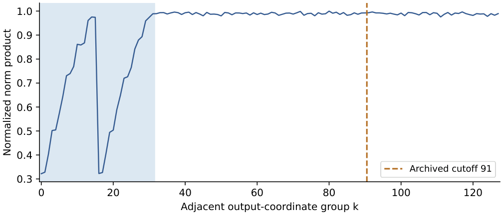
Saved Pythia-1B adjacent-coordinate norm-product profile, averaged over 16 layers and eight heads, normalized by its maximum. The shaded first 32 groups cover the 64 rotary coordinates in the native ordering; adjacent groups are not the split-half rotary planes. The dashed line marks the archived cutoff 91. Export-basis provenance remains necessary.
🖼️ Figure 15
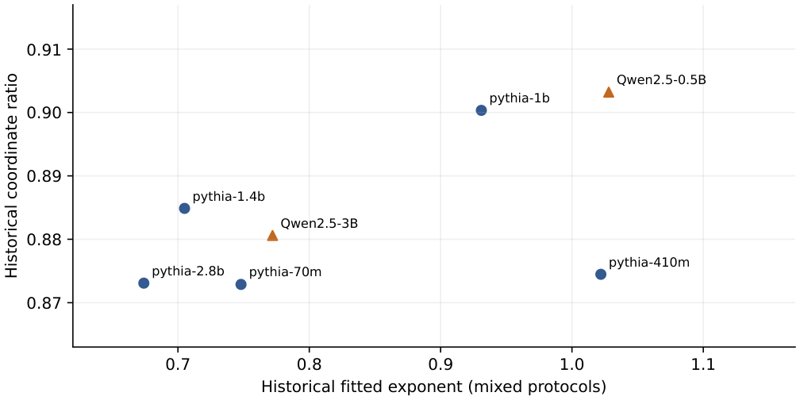
Seven historical exponent/coordinate-ratio pairs. Pythia uses the mean of per-head ratios; Qwen uses the separately saved global ratio. These are descriptive points with mixed provenance, not semantic scores. No phase regions or causal interpretation are assigned.
🖼️ Figure 16
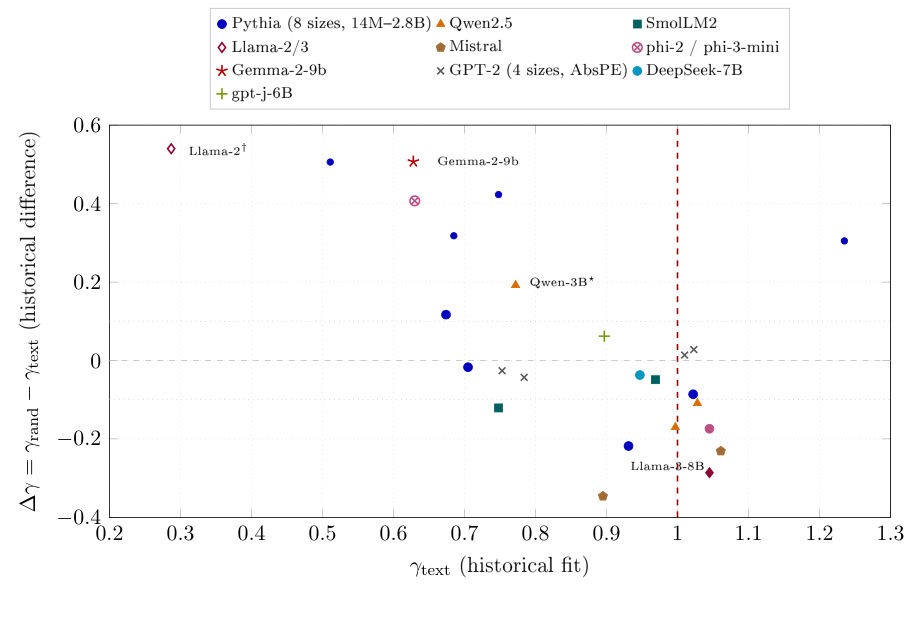
Historical 26-point exponent-difference panel, with the Pythia-2.8B contrast corrected from the unequal-support \(-.123\) to \(+.117\) on the common 30–100 grid (Section 8.4). Colors and markers group the series; the values combine historical protocols and are not circuit or architecture classifications. In particular, the plotted Qwen-3B difference is \(+0.192\); the former caption’s \(-0.225\) described a different comparison and must not be substituted for it. Dashed lines are reference values, not validated functional boundaries.
|
Model |
\(d_{\rm head}\) |
cutoff/groups |
\(M_{\rm hist}\) |
\(1/M_{\rm hist}\) |
grand ratio |
|
pythia-1.4b |
128 |
46/64 |
0.884877 |
1.130101 |
0.865139 |
|
pythia-1b |
256 |
91/128 |
0.900342 |
1.110689 |
0.894128 |
|
pythia-2.8b |
80 |
29/40 |
0.873084 |
1.145365 |
0.848381 |
|
pythia-410m |
64 |
23/32 |
0.874479 |
1.143538 |
0.803702 |
|
pythia-70m |
64 |
23/32 |
0.872883 |
1.145629 |
0.800258 |
|
SmolLM2-1.7B |
64 |
22/32 |
0.787101 |
1.270485 |
0.778233 |
|
SmolLM2-135M |
64 |
19/32 |
0.846094 |
1.181902 |
0.853030 |
|
SmolLM2-360M |
64 |
19/32 |
0.851445 |
1.174475 |
0.850211 |
Colour: blue shade = the number’s size within its column.
|
Model |
old cutoff |
first mean |
second mean |
old ratio |
|
Pythia-70M |
23 |
.0186 |
.0278 |
1.495 |
|
Pythia-160M |
23 |
.0067 |
.0096 |
1.437 |
|
SmolLM2-360M |
18 |
.0321 |
.0341 |
1.061 |
|
Qwen2.5-0.5B |
15 |
.0008 |
.0008 |
.980 |
Colour: blue shade = the number’s size within its column.
|
Pythia |
\(L\times H\) |
prompts |
\(d_{\max }\) |
global |
mean |
std |
NaN % |
|
1.4b |
\(24\times 16\) |
100 |
2000 |
0.690 |
0.907 |
0.463 |
4.688 |
|
1b |
\(16\times 8\) |
60 |
2000 |
0.753 |
0.943 |
0.331 |
0.781 |
|
2.8b |
\(32\times 32\) |
50 |
1000 |
0.969 |
1.309 |
0.631 |
0.195 |
|
410m |
\(24\times 16\) |
100 |
2000 |
0.979 |
1.328 |
0.602 |
37.500 |
|
70m |
\(6\times 8\) |
80 |
2000 |
1.122 |
1.579 |
0.817 |
37.500 |
Colour: blue shade = the number’s size within its column.
|
Step |
global fit |
finite-cell mean |
std |
NaN % |
|
1 |
0.757234 |
0.757522 |
0.016958 |
0.000 |
|
1,000 |
0.851255 |
0.877925 |
0.213461 |
0.000 |
|
10,000 |
0.875856 |
0.885266 |
0.352252 |
0.000 |
|
143,000 |
0.717686 |
0.891705 |
0.338022 |
0.781 |
Colour: blue shade = the number’s size within its column.
|
Class |
PUNCT |
COMMON |
MID |
RARE |
WHITESP |
NUMERIC |
|
Median \(g\) |
.612941 |
.754994 |
.651151 |
.853760 |
.830354 |
.921402 |
|
Selected cells |
50 |
39 |
47 |
32 |
92 |
113 |
|
Mean \(R^2\) |
.412156 |
.351339 |
.384916 |
.310053 |
.609364 |
.738798 |
15 Base/Instruct Comparisons Under a Variable-Length Probe
No numbered statement in this section.
Its figures and tables are below; its text is in the paper, p. 69.
|
Pair |
base |
instruct |
\(\delta \gamma \) |
descriptive bin |
|
SmolLM2-135M |
0.913 |
0.922 |
\(+0.009\) |
small |
|
SmolLM2-360M |
0.890 |
0.887 |
\(-0.003\) |
small |
|
SmolLM2-1.7B |
0.866 |
0.916 |
\(+0.050\) |
increase |
|
Qwen2.5-0.5B |
0.906 |
0.848 |
\(-0.058\) |
decrease |
|
Qwen2.5-1.5B |
0.980 |
0.973 |
\(-0.007\) |
small |
|
Qwen2.5-3B |
0.746 |
0.698 |
\(-0.048\) |
decrease |
|
Llama-3.2-1B |
0.829 |
0.757 |
\(-0.072\) |
decrease |
|
Llama-3.2-3B |
0.679 |
0.730 |
\(+0.051\) |
increase |
Colour: blue shade = the number’s size within its column.
16 Corpus Contrasts and the Unvalidated Architecture Ratio
For a specified checkpoint, precision, attention implementation, distance grid and length/query rule, define
Cite: Definition 16.1, p. 70, doi:10.5281/zenodo.24379538
↳ Not used by another result of the paper.
En palabras.
El contraste resta el exponente ajustado en texto al ajustado en tokens aleatorios. Su signo solo se interpreta si se han emparejado checkpoint, precisión, implementación, malla de distancias y regla de consulta.
Alcance.
El signo no identifica por sí solo un circuito, una arquitectura ni una causa de la diferencia observada.
|
Model |
\(G\) |
window |
random |
text |
\(\Delta \gamma \) |
|
Gemma-2-9B |
2 |
4096 |
1.135 |
.628 |
+.507 |
|
Llama-3-8B |
4 |
– |
.931 |
1.046 |
-.115 |
|
Mistral-7B-v0.1 (fp16) |
4 |
4096 |
.830 |
1.061 |
-.231 |
|
Pythia-70M |
1 |
– |
.748 |
.748 |
\(\approx 0\) |
|
Falcon-7B (RoPE, MQA) |
71 |
– |
\(R^2\): .88 / .999 |
unavailable |
|
Colour: blue shade = the number’s size within its column.
|
Model |
round |
\(R_c\) |
random |
text |
\(\Delta \gamma \) |
\(R^2_{\rm rnd}\) |
|
pythia-2.8b |
3 |
0.473 |
0.810 |
0.769 |
\(+0.041\) |
0.961 |
|
SmolLM2-1.7B |
2 |
0.479 |
0.866 |
0.846 |
\(+0.020\) |
0.997 |
|
Llama-3-8B |
3 |
0.924 |
0.821 |
0.856 |
\(-0.034\) |
0.966 |
|
Mistral-7B (NF4) |
4 |
0.957 |
0.834 |
0.981 |
\(-0.147\) |
0.678 |
|
Yi-6B |
2 |
1.275 |
0.966 |
0.842 |
\(+0.124\) |
0.980 |
|
Llama-3.2-3B |
2 |
1.331 |
0.679 |
0.594 |
\(+0.085\) |
0.942 |
|
Qwen2.5-3B |
2 |
2.034 |
0.746 |
0.799 |
\(-0.053\) |
0.988 |
|
Qwen2.5-1.5B |
2 |
3.085 |
0.980 |
1.063 |
\(-0.083\) |
0.959 |
|
Qwen2.5-0.5B |
2 |
17.078 |
0.906 |
0.861 |
\(+0.045\) |
0.991 |
Colour: blue shade = the number’s size within its column.
17 Diagnostic Manual and Model Encyclopaedia
No numbered statement in this section.
Its figures and tables are below; its text is in the paper, p. 73.
|
Observation |
Follow-up |
|
Poor power-law fit |
Inspect support, masks, sinks and competing families; do not infer architecture from \(R^2\). |
|
Fit near or above one |
Compute finite-support quantities; validate any cache policy with task outcomes. |
|
Nonzero corpus contrast |
Preserve both estimates and their uncertainty; check matched metadata and corpus-load success. |
|
Head or layer heterogeneity |
Inspect individual profiles; establish circuit function with direct tests. |
|
Large mass quantile |
Treat as a distributional calculation, not a guarantee of useful retained context. |
|
ID |
Model |
input \(g\) |
discrete |
continuous |
|
P01 |
phi-3-mini (text) |
0.629563 |
1527 |
1532.07 |
|
P02 |
Falcon-7B |
0.924685 |
1070 |
1106.76 |
|
P03 |
CodeLlama-13B |
0.382302 |
1689 |
1689.14 |
|
P04 |
Gemma-2-9B (text) |
0.627646 |
1529 |
1533.78 |
|
P05 |
Mistral-Nemo-Instruct |
0.428448 |
1667 |
1667.50 |
|
P06 |
Pythia-2.8B |
0.674162 |
1482 |
1489.31 |
|
P07 |
Pythia-1.4B |
0.705073 |
1447 |
1456.02 |
|
P08 |
SmolLM2-135M |
0.747996 |
1392 |
1404.20 |
|
P09 |
Qwen2.5-3B |
0.772033 |
1358 |
1372.05 |
|
P10 |
Pythia-70M |
0.747602 |
1392 |
1404.70 |
|
P11 |
SmolLM2-360M |
0.969173 |
963 |
1008.40 |
|
P12 |
Pythia-1B |
0.931108 |
1055 |
1093.12 |
|
P13 |
Qwen2.5-7B |
0.996695 |
892 |
943.26 |
|
P14 |
Qwen2.5-0.5B |
1.028374 |
807 |
864.95 |
|
P15 |
Mistral-7B-v0.1 |
1.060750 |
717 |
782.24 |
|
P16 |
Llama-3-8B |
1.045476 |
760 |
821.52 |
|
P17 |
Gemma-2-9B (random) |
1.134796 |
515 |
591.04 |
|
P18 |
phi-3-mini (random) |
1.036602 |
784 |
844.14 |
|
P19 |
Llama-2-7B (Kaggle) |
1.210761 |
334 |
410.37 |
|
P20 |
Llama-2-13B (Kaggle) |
1.054530 |
735 |
798.28 |
|
P21 |
BLOOM-7b1 |
1.217824 |
319 |
395.16 |
Colour: blue shade = the number’s size within its column.
18 Limitations and Open Questions
No numbered statement in this section.
Its figures and tables are below; its text is in the paper, p. 76.
|
Topic |
Observation and implication |
|
Near \(g=1\) |
The sub-one large-\(N\) approximation tends to zero at fixed \(N\); the finite continuous quantile instead tends to \(N^f\). The discrete normalizer is finite. Use the appropriate finite-support calculation. |
|
\(g{\gt}1\) |
Both finite quantiles remain defined. A Phase-A asymptotic approximation is inappropriate; measured cache performance is still a separate outcome. |
|
Base/instruct |
Eight rounded D3 pairs have two increases, three decreases and three small changes. Missing raw output prevents a full replay or causal RLHF claim. |
|
GQA ratio |
Observed signs do not follow the proposed monotone gate. Mixed models and a chosen singular reference do not identify a causal mechanism. |
|
ALiBi |
A reported numerical zero at 5000 does not uniquely identify exponential collapse. Inspect masks, content and precision before interpreting it. |
|
Mittag–Leffler |
The reported median ratio \(.23\) uses a different denominator from the \(1.30\) power-family comparison. Each exact-normalization ratio would target one; neither establishes a waiting-time process. |
|
Tanh trajectory |
The historical four-checkpoint \(R^2=.15\) and nonmonotone slopes do not support the tested monotone trajectory, or identify a hidden time axis. |
|
Coordinate pruning |
Descriptive costs do not validate a rotary-band boundary; the inspected masks include non-rotary coordinates. Absence of a step does not prove absence of all causal hubs. |
|
Polymer analogy |
\(3g/(1+2g)\) is an untested substitution, not a measured spreading exponent. No dynamical polymer interpretation is established. |
|
Adaptive controllers |
Whole-sequence gates fail prefix causality. Their saved teacher-forced scores do not certify causal autoregressive perplexity. |
|
Möbius cluster |
All 23 configurations lie outside the test radius on the horizontal axis alone; the observed zero is structurally forced. |
19 Effective Coordinates and Dynamic Control Proposals
Assume each upstream head output at query \(t\) depends only on input positions at or before \(t\). The displayed gate followed by a per-query output projection preserves that prefix causality. Because it uses no sequence aggregate or mutable state, partitioning the same head-output tensor into query chunks does not change the result.
Proof: in this note·Covers: not formalized·Cite: Proposition 19.1, p. 87, doi:10.5281/zenodo.24379538
↳ Not used by another result of the paper.
The variance, head mean, clipping and scaling at \((b,t)\) depend only on \(h_{b,t,:,:}\). Composing these functions and a per-query linear projection with the assumed causal upstream map cannot introduce a dependence on a later token. Chunk boundaries do not occur in their definitions.
En palabras.
Si cada salida de cabeza en la posición \(t\) usa solo el prefijo hasta \(t\), una puerta calculada por consulta y una proyección también por consulta conservan esa causalidad. Dividir el mismo tensor en bloques de consultas no cambia el cálculo. La proposición depende de la hipótesis sobre las salidas anteriores; no asegura por sí sola una mejora de pérdida o de atención.
Alcance formal.
El paper da la prueba de composición; esta ficha no reclama una formalización Isabelle del programa ni de su comportamiento empírico.
|
Policy |
rotary \(\epsilon \) |
cooler \(\epsilon \) |
recorded score |
|
Baseline |
0 |
0 |
15.714571 |
|
Rotary only |
.5 |
0 |
42.763976 |
|
Cooler only |
0 |
.5 |
15.779193 |
|
Combined |
.5 |
.5 |
39.498063 |
|
Rotary strong |
1 |
0 |
520.755205 |
|
Cooler strong |
0 |
1 |
15.912687 |
|
Combined strong |
1 |
1 |
385.132282 |
Colour: blue shade = the number’s size within its column.
|
Rule |
score difference |
reported gate |
prefix test |
|
Identity |
.000000 |
1.00 |
passed |
|
Top-quartile entropy proxy |
2.372792 |
.875 |
failed |
|
Top-quartile gamma proxy |
1.658443 |
.875 |
failed |
|
Late layers |
5.110877 |
1.00 |
passed |
|
Early layers |
68.918053 |
.50 |
passed |
Colour: blue shade = the number’s size within its column.
20 Rational Coordinates and the Limits of the RG Analogy
On a prespecified model and task panel, an inverse-coordinate score might be associated with factual-error frequency after controlling for context length, model and protocol. This association and its calibration remain untested here.
Cite: Conjecture 20.1, p. 94, doi:10.5281/zenodo.24379538
↳ Not used by another result of the paper.
En palabras.
Se propone comprobar si una coordenada inversa se asocia a la frecuencia de errores factuales en un panel y protocolo fijados de antemano.
Estado.
Es una hipótesis sin prueba ni calibración empírica aquí. La función \(s_{\rm hall}\) que sigue al enunciado es un puntaje candidato, no una probabilidad de alucinación.
21 TAF Agent: Historical Software Record and Evidential Limits
No numbered statement in this section.
Its figures and tables are below; its text is in the paper, p. 95.
🖼️ Figure 17
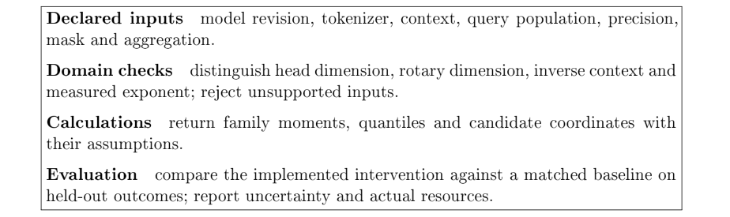
Corrected calculation and evaluation workflow. A configuration calculation does not supply a task verdict. The obsolete interface screenshot is preserved only in the predecessor archive.
|
Mode |
Intended function and necessary qualification |
|
Profile |
Collect metadata, formulas and recorded profiles; distinguish measured and predicted fields. |
|
Unmask |
Inspect position/scaling settings; configuration limits do not measure practical context quality. |
|
NIAH to Reason |
Historical retrieval/reasoning estimator; architecture-only pass rates are unvalidated. |
|
LongScore |
Present stored long-context comparisons; retain benchmark versions and protocols rather than certify current rankings. |
|
Quant |
Proposed quantization-effect estimator; architectural fields alone do not establish a gamma or PPL change. |
|
Inspect config |
Display supplied fields; missing or unsupported fields need explicit handling. |
|
Contamination |
Summarize exposure hypotheses; release dates and priors do not detect actual training contamination. |
|
Drift |
Compare evaluation metadata; a score gap alone does not identify a bug or quantify numerical noise. |
|
Arena CI |
Fit a paired-comparison model and uncertainty when raw votes and sampling assumptions permit it. |
|
Saturation |
Compare stored score ranges; apparent saturation and alternative benchmarks require dated evidence. |
|
Solutions |
Index documented evaluation issues and tools; a linked remedy is not universally applicable. |
|
Chat-template |
Identify formatting conventions and build commands; an omitted template has no universal factor-two accuracy effect. |
|
Diagnose CLI |
Generate a measurement command; actual model support and runtime dependencies must be checked. |
|
JSON CoT |
Flag output-field order; schema order alone does not prove or disprove reasoning quality. |
|
PEFT Lint |
Inspect scripts for known patterns; static checks cannot establish a successful training run. |
|
Cache Diff |
Estimate provider-specific cache effects using explicit current rules and measured hits. |
|
Spec-Decode |
Compare tokenizers; mismatch is a compatibility concern, not proof that every method is slower than baseline. |
|
Token Tax |
Count tokens with named tokenizer versions; count differences are separate from service prices and task accuracy. |
|
Object |
Inputs |
Output and scope |
|
\(\gamma _P\) |
\(\theta ,T{\gt}0\) |
Candidate in \((-1,1)\); not a measured slope. |
|
\(d_{\rm inv}\) |
\(\theta ,g\) |
Inverse coordinate for \(-1{\lt}g{\lt}1\); no information cutoff. |
|
\(2d_{\rm inv}\) |
\(\theta ,g\) |
Historical threshold proposal; no retrieval pass-rate guarantee. |
|
\(D_f\) |
\(g,N,f\) |
Mass quantile; specify continuous or discrete support. |
|
Soft decay \(w\) |
\(g,d_{\rm inv},d\) |
Multiplicative weight, or \(\log w\) score bias inside its domain; PPL requires evaluation. |
|
Base ratio |
\(g_{\rm target},T,\theta \) |
Inverse-candidate multiplier; not universal NTK optimality. |
|
Inverse base |
\(g_{\rm target},T\) |
Positive base for \(-1{\lt}g_{\rm target}{\lt}1\); task suitability unvalidated. |
|
\(\alpha _S\) |
\(R_c,N,D\), reference scales |
Historical heuristic; go/no-go interpretation withdrawn. |
|
\(n_{\rm active}\) |
\(d,\theta ,d_{\rm rot}\) |
Exact uncycled-plane count with specified pairing; no proof of semantic function. |
|
\(L_{\rm crit}\) |
Defined measurement protocol |
Historical depth hypothesis; not an architecture-only certified limit. |
|
\(C_V\) |
\(g,N\) |
Finite-family response, finite at one; no calibrated forgetting alarm. |
|
\(\chi \) |
\(g\ne 1\) |
Defined reciprocal \(1/|1-g|\); distinct from finite Fisher information. |
|
\(S_N\) |
\(g,N\) |
Shannon distance entropy; asymptotics require a specified fixed-\(g\) regime. |
|
\(\Delta \gamma \) |
Matched random/text fits |
Descriptive contrast, not a circuit or architecture classifier. |
|
\(e^{S_N}\) |
\(g,N\) |
Effective number of supported distances, not a reasoning ceiling. |
|
\(I_{\rm total}\) |
Stated coordinate convention |
Historical information-budget proposal, not derived channel capacity. |
|
Entropy-slope test |
Multiple supports and fits |
Finite-size diagnostic proposal; not a guaranteed phase classifier. |
|
\(R_{\rm patch}\) |
Intervention and baseline |
Protocol-specific recovery statistic; causal claims require controlled patching. |
22 Conclusion
No numbered statement in this section.
It is prose only (no statement, figure or table): read it in the paper (PDF).
A Symbolic Checks and Formal-Proof Scope
No numbered statement in this section.
It is prose only (no statement, figure or table): read it in the paper, p. 101.
B Audit of the Attempted Geometric Derivation
No numbered statement in this section.
It is prose only (no statement, figure or table): read it in the paper, p. 102.
C Formula Table
No numbered statement in this section.
Its figures and tables are below; its text is in the paper, p. 103.
|
Object |
Expression |
Scope |
|
Finite family |
\(p_\gamma (d)=d^{-\gamma }/Z_N\), \(Z_N=\sum _{d=1}^N d^{-\gamma }\) |
Integer \(N\ge 1\), real \(\gamma \), counting measure. |
|
Log moment |
\(U_N=\sum _d p_\gamma (d)\log d\) |
Equals \(-\partial _\gamma \log Z_N\). |
|
Entropy |
\(S_N=\log Z_N+\gamma U_N\) |
Exact finite-sum Shannon entropy; \(0\le S_N\le \log N\). |
|
Fisher metric |
\(I(\gamma )=\operatorname {Var}_{p_\gamma }(\log d)\) |
Finite at every real \(\gamma \) for fixed \(N\); evaluate directly at zero. |
|
Formal heat capacity |
\(C_V=\gamma ^2I(\gamma )\) |
Family susceptibility, not an identified task sensitivity. |
|
Intrinsic length |
\(\left|\int _{g_1}^{g_2}\sqrt{I(g)}\, dg\right|\) |
Distance along this statistical family. |
|
Continuous normalizer |
\(Z_c=(N^{1-\gamma }-1)/(1-\gamma )\); \(Z_c(1)=\log N\) |
Lebesgue measure on \([1,N]\), \(N{\gt}1\); not the discrete normalizer. |
|
Variance at one |
\(C_{V,c}(1)=(\log N)^2/12\) |
Continuous only. For discrete distances use the variance of \(\log d\). |
|
Free-energy coordinate |
\(-\log Z_N\) |
Dimensionless coordinate; division by \(\gamma \) gives the thermal convention for \(\gamma \ne 0\). |
|
Discrete mass window |
\(\min \{ k:\sum _{d=1}^k d^{-\gamma }\ge fZ_N\} \) |
Integer distance quantile; \(0{\lt}f{\lt}1\). |
|
Continuous mass window |
\([(1-f)+fN^{1-\gamma }]^{1/(1-\gamma )}\); \(N^f\) at \(\gamma =1\) |
Quantile of the continuous family, not an accuracy bound. |
|
Padé candidate |
\((2\theta -T\sqrt2)/(2\theta +T\sqrt2)\) |
\(\theta ,T{\gt}0\); range \((-1,1)\); empirical identification unestablished. |
|
Inverse base |
\(T\sqrt2(1+g)/(2(1-g))\) |
\(-1{\lt}g{\lt}1\), \(T{\gt}0\); candidate inversion, not a task optimum. |
|
Inverse context |
\(d_{\rm inv}=\theta \sqrt2(1-g)/(1+g)\) |
\(-1{\lt}g{\lt}1\), \(\theta {\gt}0\); not a validated retrieval ceiling. |
|
Shifted base |
\(b(T)=\theta +T/\sqrt2\) |
Exact coordinate definition; different from the inverse base. |
|
Log base ratio |
\(\log [b(D)/b(N)]\) |
Signed coordinate change, not established information loss. |
|
Threshold exponent |
\(d_{\rm eff}=1/\gamma \), \(\gamma {\gt}0\) |
Records a weight-threshold count exponent, not measured geometric dimension. |
|
Effective support |
\(\exp S_N\) |
Entropy effective number within the chosen family, not a task context limit. |
|
Frozen-row bound |
\(\| o-o_K\| \le \epsilon \, \operatorname {diam}\{ v_j\} \) |
Fixed scores and values, renormalized retained row, removed mass \(0\le \epsilon {\lt}1\). |
|
Soft decay |
\(w(d)=(1-d/d_{\rm inv})^\gamma \) inside \(0{\lt}d{\lt}d_{\rm inv}\) |
For positive \(\gamma ,d_{\rm inv}\): use \(\log w\) as a score bias; an empirical proposal, not a geometry theorem. |
|
Corpus contrast |
\(\widehat\gamma _{\rm random}-\widehat\gamma _{\rm text}\) |
Matched-protocol descriptive statistic; not a causal architecture identifier. |
Colour: green = yes / holds.
D Zipf and Attention: Saved-Panel Audit
No numbered statement in this section.
Its figures and tables are below; its text is in the paper, p. 104.
|
Model |
rank exponent |
text attention exponent |
|
Pythia-70M |
.997365 |
.747602 |
|
Pythia-1B |
.997365 |
.931108 |
|
Pythia-1.4B |
.997365 |
.705073 |
|
Llama-2-7B |
1.232283 |
.287057 |
|
Mistral-7B |
1.164898 |
1.060750 |
|
Qwen2.5-7B |
1.015546 |
.996695 |
|
Llama-3-8B |
1.007281 |
1.045476 |
E Quick Reference Card
No numbered statement in this section.
It is prose only (no statement, figure or table): read it in the paper, p. 105.
F Productive Negative Results
No numbered statement in this section.
It is prose only (no statement, figure or table): read it in the paper, p. 106.
G Compendium of Critical Findings
No numbered statement in this section.
Its figures and tables are below; its text is in the paper, p. 110.
|
ID |
Original topic |
Current conclusion |
Location |
|
F1 |
Padé predictor |
Algebraic candidate. Universal derivation withdrawn; initial and October panels have different protocols and denominators. |
§5.3 |
|
F2 |
Rotary geometry |
Exact cycle counts require the actual rotary subspace and pairing convention. Completing a cycle does not prove loss of information. |
§4.2 |
|
F3 |
Boundary at one |
Infinite-support summability boundary. Finite sums are analytic; \((\log N)^2/12\) is the continuous variance, not the discrete value. |
§7 |
|
F4 |
Entropy law |
Finite entropy bound and distinct fixed-exponent asymptotics. The old leading factor \((1-\gamma )\) is incorrect. |
§7.4 |
|
F5 |
Semantic reservoir |
Unsupported by the inspected masks: B3 removes unequal coordinate sets; the amplification script also changes V. |
§13 |
|
F6 |
Band dissociation |
Full B3 sweep retained. The larger coordinate mask has higher PPL in all six windows; no semantic/positional double dissociation. |
§7.4 |
|
F7 |
KV window |
Exact discrete and continuous mass quantiles are different. Recorded truncation trials do not establish a universal accuracy-preserving range. |
§11 |
|
F8 |
NTK scaling |
Base multiplier differs from context factor. B1 ratios hid short-context PPL costs; candidate-ranking counts do not establish Pareto dominance or a universal optimum. |
§12 |
|
F9 |
Base design |
Corrected table generated from the inverse equation. At \(T=4096\), targets \(0.5\) and \(0.85\) give about 8689 and 35721; task assignments are unvalidated. |
§12.1 |
|
F10 |
GQA pressure |
Architectural association hypothesis. Mixed configurations and corpora do not isolate a causal effect of the number of KV heads. |
§8.4 |
|
F11 |
Boiling criterion |
Thresholds for forgetting or loss spikes are unvalidated. A family heat capacity is not a measured risk probability. |
§7.2 |
|
F12 |
Induction threshold |
A universal sign transition near 400M parameters is unsupported; fitting supports and alternative mechanisms matter. |
§8.4 |
|
F13 |
SWA confinement |
Masking affects available keys, but the reported cross-model contrasts do not identify a universal exponent shift. |
§16 |
|
F14 |
Alignment shifts |
Historical base/instruction pairs retain their measured differences. They do not isolate RLHF from SFT, DPO or other changes. |
§15 |
|
F15 |
Holography |
A Shannon entropy bound does not establish entanglement geometry, a Ryu–Takayanagi identification or universal central charge. |
§7.4 |
|
F16 |
Fisher identity |
\(C_V=\gamma ^2I\) is exact in the finite family. Division by \(\gamma ^2\) excludes zero, and extrema need not coincide. |
§7.3 |
|
F17 |
RG flow |
The rational-coordinate differential equation and its solution are conditional algebra, not a measured training trajectory. |
§20.2 |
|
F18 |
Controller recovery |
Adaptive historical hooks pool future positions and fail prefix causality; their scores do not certify causal PPL. Recovery denominators differ and the Fisher prediction is withdrawn. November tests are separate evidence. |
§19.2 |
|
F19 |
Soft decay |
Recorded policy comparisons remain protocol-specific. The score bias is \(\log w(d)\), not \(w(d)\); no general PPL improvement follows. |
§11.6 |
|
F20 |
Pruning cost |
Slopes on two model experiments are descriptive fits, not a universal cost law or a cross-model uncertainty interval. The proposed layer cutoff was withdrawn. |
App. F |
H The Historical Alpha-S Gate: Definition and Failure
No numbered statement in this section.
It is prose only (no statement, figure or table): read it in the paper, p. 112.
I Bilingual Glossary
No numbered statement in this section.
It is prose only (no statement, figure or table): read it in the paper, p. 113.
Acknowledgements
No numbered statement in this section.
It is prose only (no statement, figure or table): read it in the paper (PDF).
J Correction Register and Separate Historical Archive
No numbered statement in this section.
Its figures and tables are below; its text is in the paper, p. 115.
|
ID |
Issue |
Resolution in this edition |
|
1 |
Geometric prediction of trained attention |
Score decomposition retained; missing statistical premises made explicit. Configuration-only universality and the invalid derivation are withdrawn. Sections 5.2–5.4. |
|
2 |
Variable-length measurement confound |
The E4 and field nulls use their actual protocols. Fixed-query QL is distinguished, with provenance and missing observations stated. Sections 9.1 and 14.3. |
|
3 |
Finite and continuous thermodynamics |
Separate normalizers, moments, Fisher information and quantiles; correct domains and finite value at one. Sections 6.4–7.4. |
|
4 |
KV performance guarantees |
Exact mass budgets and frozen-row bounds replace configuration-only accuracy claims; experimental policies and denominators remain distinct. Section 11. |
|
5 |
Rotary/semantic band interpretation |
Actual rotary subspace, pairing and adjacent-coordinate masks are reported. Coordinate ablations no longer identify semantic frequency bands. Sections 11.7 and 13. |
|
6 |
Inverse base and NIAH guarantees |
Correct inverse and explicit test protocols; algebraic identities are not independent retrieval predictions. Section 12. |
|
7 |
Corpus, lexical and architecture labels |
Matched observables and missing query/count records are stated. Signs do not identify induction heads, SWA or GQA. Sections 14.3–16. |
|
8 |
Control uses future positions |
New per-query reference passes prefix and partition checks. Defective historical scores are not relabelled as causal PPL. Section 19.3. |
|
9 |
Wrong head-projection boundary |
New reference acts before the inspected NeoX mixing projection, with declared layout checks. Post-projection blocks are not called heads. Section 19.3. |
|
10 |
Non-unit, incorrectly paired rotations |
New tables use unique frequencies and explicit pairing; norm, inverse rotation and unrotated-tail checks pass. Section 19.3. |
|
11 |
Controller summaries and denominators |
All saved rows retained; recovery denominators and layer comparisons corrected. No Fisher-based efficacy claim. Section 19.2. |
|
12 |
Potential, stability and finite-time claim |
Correct potential and exact trajectory; positive endpoint repels and negative endpoint attracts in the stated direction. Section 20.2. |
|
13 |
Möbius domain and fixed-point test |
Right-half-plane mapping and determinant corrected; 0/23 clustering is structurally uninformative. Section 20.3. |
|
14 |
Fractional/CFT/BTZ identifications |
Correct algebra and domain conditions; unsupported physical equivalences withdrawn. Section 20. |
|
15 |
Complete-proof and Taylor claims |
Invalid averaging and normalization steps removed; inverse compositions and numerical errors corrected. Appendix B. |
|
16 |
Zipf, grokking, signs and ranges |
Complete saved panels, proper correlation domains and actual probe support replace the earlier summaries. Appendices D and F. |
|
17 |
V1/V2 context-input mismatch |
Old panel rejected as validation; replacement interface requires an independently declared token context. Explicit illustrative calculations are provided in Appendix F. |
|
18 |
Catalogue, software and glossary |
Correct counts, calculation domains and terminology; obsolete verdict screenshot replaced by an evaluation workflow. Section 21 and Appendix I. |
|
19 |
Alpha-S products and circuit labels |
Products recomputed from declared inputs. Classification marks and unsupported training-budget decisions removed. Appendix H. |
|
20 |
Bibliographic errors |
Incorrect locators, titles and authors corrected; blogs identified; version-sensitive citation pinned; argumentative notes removed. Source metadata and exact changes are archived. |
|
21 |
Contradictory archival prose and notation |
Erroneous prose moved to the separate predecessor archive. \(d_{\rm head}\) and \(d_{\rm inv}\) now denote distinct objects throughout. |
Colour: blue shade = the number’s size within its column.
K Eight Formally Verified Result Groups
At distance \(d_k\), a probe averages allowed attention entries using weights \(\alpha _{kr}\ge 0\), \(\sum _r\alpha _{kr}=1\). If row \(r\) has \(n_{kr}\ge 1\) allowed keys, its uniform-attention null is
For every positive profile on the same grid and regression weights,
A constant null has zero slope. Keeping the same queries, support sizes and averaging weights at each distance is sufficient for a constant null.
Isabelle · ours · partshow
Only a part is in Isabelle: Requiere pesos de sonda fijos y una probabilidad finita; no caracteriza el aprendizaje.
fixed_probe_null · Isabelle/TransformerAttentionPartI/TAF_Probe.thy, line 22 — nulo uniforme de una sonda fija
lemma fixed_probe_null:
assumes a: "\<And>k r. k\<in>K \<Longrightarrow> r\<in>R \<Longrightarrow> a k r = b r"
and n: "\<And>k r. k\<in>K \<Longrightarrow> r\<in>R \<Longrightarrow> n k r = m r"
and k: "k\<in>K"
shows "probe_null R a n k = (\<Sum>r\<in>R. b r / real (m r))"slope_covariance · Isabelle/TransformerAttentionPartI/TAF_Probe.thy, line 85 — pendiente logarítmica como covarianza ponderada
lemma slope_covariance: "log_slope S p x A = -fw_cov S p x (\<lambda>i. ln (A i)) / fw_var S p x"
log_slope_ratio · Isabelle/TransformerAttentionPartI/TAF_Probe.thy, line 29 — calibración con un perfil de referencia
lemma log_slope_ratio:
assumes pos: "\<And>i. i\<in>S \<Longrightarrow> 0 < A i"
and pos0: "\<And>i. i\<in>S \<Longrightarrow> 0 < A0 i"
shows "log_slope S w x (\<lambda>i. A i/A0 i) =
log_slope S w x A - log_slope S w x A0"Proof: in this note·Formalized: Isabelle/HOL, by the author (public formalizations repository)·Covers: part: Requiere pesos de sonda fijos y una probabilidad finita; no caracteriza el aprendizaje.·Cite: doi:10.5281/zenodo.24379538
🆕 Classical and new: Aplicación al protocolo de medición; las identidades elementales no se presentan como novedades.
↳ Used in: Theorem K.2, Theorem K.3
An allowed entry in a uniform row equals \(1/n_{kr}\). Averaging gives the displayed null, which is positive. Substitute \(\log (A_k/A_{0,k})=\log A_k-\log A_{0,k}\) in Equation (87); covariance is linear in its second argument. The covariance with a constant is zero.
En palabras.
La pendiente medida depende de la sonda y de los pesos de la regresión. Una fila uniforme puede producir un perfil aparente; restar la pendiente de un nulo construido con el mismo instrumento cancela esa contribución de forma algebraica. La prueba no describe cómo se comporta un modelo entrenado.
For \(A_0(d)=c/(ad+b)\) with \(a,b,c{\gt}0\), on the nondegenerate grid of Group 1,
With the grid and weights fixed, this slope strictly decreases with \(b\). Replacing all distances by \(\lambda d_k\), \(\lambda {\gt}0\), makes the slope strictly increase with \(\lambda \); its limits as \(\lambda \downarrow 0\) and \(\lambda \to \infty \) are respectively zero and one. The amplitude \(c\) has no effect.
Isabelle · ours · partshow
Only a part is in Isabelle: Describe el sesgo del instrumento bajo exposición afín; no un mecanismo del transformer.
affine_regression_strict_bounds · Isabelle/TransformerAttentionPartI/TAF_Affine_Bounds.thy, line 83 — límites estrictos de la pendiente en una malla finita
lemma affine_regression_strict_bounds:
assumes var: "0<fw_var S p x" and a: "0<a" and b: "0<b"
and range: "\<And>i. i\<in>S \<Longrightarrow> l\<le>x i" "\<And>i. i\<in>S \<Longrightarrow> x i\<le>u"
shows "a*exp l/(a*exp l+b)<fw_cov S p x (\<lambda>i. affine_log a b (x i))/fw_var S p x"
"fw_cov S p x (\<lambda>i. affine_log a b (x i))/fw_var S p x<a*exp u/(a*exp u+b)"affine_slope_limits · Isabelle/TransformerAttentionPartI/TAF_Affine_Limits.thy, line 99 — límites al variar la escala
lemma affine_slope_limits:
assumes var: "0<fw_var S p x" and a: "0<a" and b: "0<b"
and range: "\<And>i. i\<in>S \<Longrightarrow> l\<le>x i" "\<And>i. i\<in>S \<Longrightarrow> x i\<le>u"
shows "((\<lambda>r. affine_slope S p x a b r) \<longlongrightarrow> 0) (at_right 0)"
"((\<lambda>r. affine_slope S p x a b r) \<longlongrightarrow> 1) at_top"Proof: in this note·Formalized: Isabelle/HOL, by the author (public formalizations repository)·Covers: part: Describe el sesgo del instrumento bajo exposición afín; no un mecanismo del transformer.·Cite: doi:10.5281/zenodo.24379538
↳ Not used by another result of the paper.
The slope is the regression of \(f(x)=\log (ae^x+b)\) on \(x\). Its derivative \(ae^x/(ae^x+b)\) strictly increases. The mean-value theorem places each nontrivial secant strictly between the endpoint derivatives; the convex combination proves the bounds. Differentiating the finite covariance gives
The signs follow from the pairwise identity and strict opposite or common ordering. Adding \(\log \lambda \) to every \(x_k\) changes neither centered coordinates nor variance. On a finite grid, the log-profile tends to a constant at zero scale, while \(\log (a\lambda d+b)=\log (a\lambda )+\log d+o(1)\) at infinite scale. Constants disappear from the covariance, including \(\log c\).
En palabras.
Si el número de posiciones expuestas tiene la forma \(ad+b\), la elasticidad local es una fracción entre cero y uno. La pendiente OLS queda entre los valores extremos de esa elasticidad en la rejilla. Cambiar la rejilla o el desplazamiento cambia la lectura del instrumento.
Let \(J\ge 1\), \(a_j{\gt}0\), \(g_j\in \mathbb R\), and \(A(d)=\sum _{j=1}^{J}a_jd^{-g_j}\) for \(d{\gt}0\), with coefficients and exponents independent of distance. For \(x=\log d\), put \(\pi _j(x)=a_je^{-g_jx}/\sum _\ell a_\ell e^{-g_\ell x}\). Then
The finite-grid exponent satisfies
If two component exponents differ, the local slope strictly decreases, and the mixture cannot be an exact power on any open interval.
Isabelle · oursshow
strict_mean_decrease · Isabelle/TransformerAttentionPartI/TAF_Mixture_Entropy.thy, line 38 — disminución de la pendiente local si difieren los exponentes
lemma strict_mean_decrease: assumes i: "i\<in>S" and j: "j\<in>S" and diff: "E i\<noteq>E j" and uv: "u<v" shows "emean v < emean u"
mixture_regression_bounds · Isabelle/TransformerAttentionPartI/TAF_Regression_Calculus.thy, line 65 — cotas de la regresión finita
lemma mixture_regression_bounds:
assumes p: "finite_probability I w" and var: "0<fw_var I w x"
and range: "\<And>i. i\<in>I \<Longrightarrow> l\<le>x i" "\<And>i. i\<in>I \<Longrightarrow> x i\<le>u"
shows "emean u\<le>log_slope I w x (\<lambda>i. mom 0 (x i))"
"log_slope I w x (\<lambda>i. mom 0 (x i))\<le>emean l"non_affine_log_partition · Isabelle/TransformerAttentionPartI/TAF_Strict_Family.thy, line 38 — no afinidad de la partición no degenerada
lemma non_affine_log_partition:
assumes i: "i\<in>S" and j: "j\<in>S" and diff: "E i\<noteq>E j" and ab: "l<u"
shows "\<not> (\<forall>x\<in>{l<..<u}. ln (mom 0 x)=c-k*x)"Proof: in this note·Formalized: Isabelle/HOL, by the author (public formalizations repository)·Covers: the whole statement·Cite: doi:10.5281/zenodo.24379538
↳ Not used by another result of the paper.
Logarithmic differentiation yields the weighted mean. Since \(\pi _j'=\pi _j(-g_j+\sum _\ell \pi _\ell g_\ell )\), differentiating it yields the negative variance. Every \(\pi _j\) is positive, so that variance vanishes exactly when all component exponents agree. Applying the secant identity to \(-\log A(e^x)\) bounds the regression by its extreme derivatives. An exact power would have constant local slope.
En palabras.
Al sumar dos perfiles de potencia, el logaritmo de la suma suele curvarse. La derivada de su pendiente local es menos una varianza; por ello una mezcla con exponentes distintos puede aparentar un exponente dependiente de la distancia sin que cada componente cambie de ley.
Let \(N\ge 2\) be an integer and \(p_g(d)=d^{-g}/Z_N(g)\) on \(\{ 1,\ldots ,N\} \), with \(g\in \mathbb R\). For \(1\le k{\lt}N\), the prefix mass \(F_g(k)=\sum _{d\le k}p_g(d)\) is strictly increasing in \(g\). For \(0{\lt}f{\lt}1\), the well-defined integer quantile
is nonincreasing in \(g\) and, for fixed \(g,f\), nondecreasing in \(N\). These conclusions include negative exponents, zero and one.
Isabelle · ours · partshow
Only a part is in Isabelle: El mínimo que define el cuantil se usa en conjuntos finitos no vacíos.
quantile_nonincreasing · Isabelle/TransformerAttentionPartI/TAF_Power_Family.thy, line 53 — orden de cuantiles al variar el exponente
lemma quantile_nonincreasing: assumes fract: "fract\<le>1" and gh: "g\<le>h" shows "quantile h fract\<le>quantile g fract"
quantile_support_order · Isabelle/TransformerAttentionPartI/TAF_Power_Support.thy, line 8 — orden al ampliar el soporte
lemma quantile_support_order:
assumes N: "1\<le>N" and NM: "N\<le>M" and fn: "fract\<le>F N" and gm: "fract\<le>G M"
and order: "\<And>k. k\<in>{1..N} \<Longrightarrow> G k\<le>F k"
shows "finite_quantile N F fract\<le>finite_quantile M G fract"Proof: in this note·Formalized: Isabelle/HOL, by the author (public formalizations repository)·Covers: part: El mínimo que define el cuantil se usa en conjuntos finitos no vacíos.·Cite: doi:10.5281/zenodo.24379538
↳ Not used by another result of the paper.
The defining set is finite and contains \(N\). Put \(X=\log d\) and \(L_k=\{ 1,\ldots ,k\} \). Differentiating the finite sums gives
Both groups have positive mass and every logarithm in the second exceeds every logarithm in the first. Increasing \(g\) can only advance the first crossing of \(f\). Increasing \(N\) leaves an old prefix numerator unchanged and increases its denominator; it cannot produce an earlier crossing.
En palabras.
Con soporte fijo, aumentar el exponente desplaza masa hacia las distancias cortas, así que el cuantil no puede aumentar. Ampliar el soporte puede moverlo en el sentido opuesto. Son órdenes finitos bajo las condiciones escritas, no una receta automática para elegir una ventana KV.
For integer \(N\ge 1\) and real \(g,h\), let \(\psi (g)=\log Z_N(g)\), \(U(g)={\mathbb {E}}_{p_g}\log d\), \(I(g)=\operatorname {Var}_{p_g}(\log d)\) and \(S(g)=-\sum _dp_g(d)\log p_g(d)\). All these functions are smooth to every order for finite \(g\), and
Writing \(L=\log N\),
Moreover,
For \(N\ge 2\), \(I(g){\gt}0\), and \(S\) has its unique maximum at \(g=0\).
Isabelle · oursshow
mean_derivative · Isabelle/TransformerAttentionPartI/TAF_Exponential_Family.thy, line 89 — derivada de la media igual a menos la varianza
lemma mean_derivative: "(emean has_real_derivative (-evar t)) (at t)"
entropy_derivative · Isabelle/TransformerAttentionPartI/TAF_Mixture_Entropy.thy, line 106 — derivada de la entropía
lemma entropy_derivative: "(canonical_entropy has_real_derivative (-t*evar t)) (at t)"
kl_integral_remainder · Isabelle/TransformerAttentionPartI/TAF_KL_Remainder.thy, line 11 — resto integral exacto de KL
lemma kl_integral_remainder:
"finite_kl S (ep g) (ep h) = ereal ((h-g)^2 *
integral {0..1} (\<lambda>t. (1-t)*evar (g+t*(h-g))))"Proof: in this note·Formalized: Isabelle/HOL, by the author (public formalizations repository)·Covers: the whole statement·Cite: doi:10.5281/zenodo.24379538
🆕 Classical and new: Identidades clásicas de familias exponenciales finitas, aplicadas aquí a perfiles de atención.
↳ Not used by another result of the paper.
Differentiate the finite sums using \(p_g'=-p_g(\log d-U)\). Positivity of \(Z_N\) makes its logarithm and all quotients smooth. For \(X\in [0,L]\), \({\mathbb {E}}[X(L-X)]\ge 0\) yields \(\operatorname {Var}X\le L{\mathbb {E}}X-({\mathbb {E}}X)^2\le L^2/4\). The log-ratio of probabilities gives the KL identity. Taylor’s integral remainder for \(\psi \) gives the next equality, also for \(h{\lt}g\); integrating the variance bound gives \(L^2(h-g)^2/8\). The two power distributions are softmaxes whose score difference has oscillation \(|h-g|L\). Group 7 proves the TV bound, and \(\tanh u\le \min \{ 1,u\} \) for \(u\ge 0\) gives its linear form. For \(N\ge 2\) at least two distinct log-distances have positive mass; thus \(I{\gt}0\) and \(S'=-gI\) proves the unique maximum. For \(N=1\) all displayed quantities and divergences are zero.
En palabras.
Una función de partición genera la media, la varianza y las derivadas de esta familia finita. La divergencia KL entre dos parámetros es exactamente un resto convexo. Para soporte finito no hay singularidad matemática en el parámetro uno; las identidades son estándar de familias exponenciales.
Let \(p\) be a probability on a finite nonempty key set and retain a subset \(K\) with \(p(K)=1-\epsilon {\gt}0\). Set \(q_j=p_j/(1-\epsilon )\) in \(K\) and \(q_j=0\) outside. Then
If \(\epsilon {\gt}0\), then \(\operatorname {KL}(p\Vert q)=+\infty \). For fixed values \(v_j\), \(o=\sum _jp_jv_j\) and \(o_K=\sum _jq_jv_j\) satisfy
For \(\epsilon {\gt}0\), if \(o_R\) is the conditional mean over removed keys, \(o-o_K=\epsilon (o_R-o_K)\). The constants one and two are optimal in general.
Isabelle · ours · partshow
Only a part is in Isabelle: La red que cambia tras truncar requiere evaluación separada.
truncation_tv · Isabelle/TransformerAttentionPartI/TAF_Truncation.thy, line 43 — variación total igual a la masa retirada
lemma truncation_tv: "tv_distance S p (cut_prob K p) = 1-sum p K"
frozen_output_exact · Isabelle/TransformerAttentionPartI/TAF_Vector_Output.thy, line 89 — diferencia exacta de salida en una fila congelada
lemma frozen_output_exact:
assumes "sum p K<1"
shows "norm (vector_mean S p v-vector_mean S (cut_prob K p) v) =
(1-sum p K)*norm (vector_mean S (cut_prob (S-K) p) v-vector_mean S (cut_prob K p) v)"Proof: in this note·Formalized: Isabelle/HOL, by the author (public formalizations repository)·Covers: part: La red que cambia tras truncar requiere evaluación separada.·Cite: doi:10.5281/zenodo.24379538
↳ Not used by another result of the paper.
In \(K\), the nonnegative differences \(q_j-p_j\) sum to \(\epsilon \); outside, the \(p_j\) also sum to \(\epsilon \). This proves TV. On the positive support of \(q\), its likelihood ratio to \(p\) is \(1/(1-\epsilon )\), giving reverse KL. Positive removed mass creates a positive \(p_j\) with \(q_j=0\), giving infinite forward KL. For \(\epsilon {\gt}0\), decompose \(o=(1-\epsilon )o_K+\epsilon o_R\). The difference of the two conditional means is a convex combination of differences \(v_r-v_k\) and is bounded by the diameter, which is at most twice the maximum norm. For \(\epsilon =0\) the two distributions and outputs agree. A retained value \(-Bu\) and a removed value \(Bu\), with \(\| u\| =1\), \(B{\gt}0\) and masses \(1-\epsilon ,\epsilon \), attain both bounds.
En palabras.
Si se elimina masa \(\varepsilon \) de una fila y se renormaliza el resto, su distancia de variación total respecto a la original es exactamente \(\varepsilon \). La diferencia de salida también se descompone exactamente en la media retirada y la conservada. Esto supone una fila congelada.
On a finite nonempty support, let \(q=\operatorname {softmax}(s)\) and \(p=\operatorname {softmax}(s+r)\) for finite real scores. With \(\omega =\max _jr_j-\min _jr_j\),
The bound is optimal over positive distributions and errors with this oscillation. If \(|r_j|\le \eta \), then TV is at most \(\tanh (\eta /2)\). For fixed values,
Isabelle · oursshow
softmax_oscillation_bound · Isabelle/TransformerAttentionPartI/TAF_Softmax.thy, line 71 — cota óptima en función de la oscilación
lemma softmax_oscillation_bound:
assumes fin: "finite S" and ne: "S\<noteq>{}"
and lo: "\<And>i. i\<in>S \<Longrightarrow> l \<le> r i"
and hi: "\<And>i. i\<in>S \<Longrightarrow> r i \<le> u"
shows "tv_distance S (finite_softmax S s) (finite_softmax S (\<lambda>i. s i+r i))
\<le> tanh ((u-l)/4)"logarithmic_score_stability · Isabelle/TransformerAttentionPartI/TAF_Log_Scores.thy, line 40 — estabilidad desde puntajes logarítmicos
lemma logarithmic_score_stability:
assumes fin: "finite S" and ne: "S\<noteq>{}"
and pos: "\<And>i. i\<in>S \<Longrightarrow> 0<d i"
and lo: "\<And>i. i\<in>S \<Longrightarrow> l\<le>r i"
and hi: "\<And>i. i\<in>S \<Longrightarrow> r i\<le>u"
shows "tv_distance S (finite_power_profile S d g)
(finite_softmax S (\<lambda>i. b-g*ln (d i)+r i))\<le>tanh ((u-l)/4)"Proof: in this note·Formalized: Isabelle/HOL, by the author (public formalizations repository)·Covers: the whole statement·Cite: doi:10.5281/zenodo.24379538
↳ Used in: Theorem K.8
A constant score shift cancels, proving the case \(\omega =0\). Otherwise shift the errors so that \(Y_j=e^{r_j}\in [1,M]\), \(M=e^\omega {\gt}1\), and let \(\mu ={\mathbb {E}}_qY\). Then \(p_j=q_jY_j/\mu \), so \(\operatorname {TV}(p,q)={\mathbb {E}}_q|Y-\mu |/(2\mu )\). The chord of the convex function \(|y-\mu |\) on \([1,M]\) gives
The second inequality follows from \((\mu -\sqrt M)^2\ge 0\). Equality is attained with \(Y=1,M\) and respective probabilities \(\sqrt M/(1+\sqrt M)\) and \(1/(1+\sqrt M)\), which give \(\mu =\sqrt M\). These strictly positive probabilities are realized by finite softmax scores. The absolute error bound gives \(\omega \le 2\eta \). Finally the positive and negative parts of \(p-q\) each have mass TV; normalizing them expresses the output difference as TV times a difference of convex combinations, bounded by the diameter. If TV is zero the output difference is zero directly.
En palabras.
La atención sólo cambia si cambian las diferencias entre scores: sumar la misma constante a todos no tiene efecto. Una cota óptima de variación total depende de la oscilación del error. La precisión del resultado depende de acotar esa oscilación para los scores reales.
🧪 Lab: Sharp softmax stability for your score errors
Compare two finite softmax rows and the sharp total-variation bound from score-error oscillation.
For integer \(m\ge 1\), \(\theta {\gt}1\), \(L=\log \theta \) and real \(d{\gt}0\), define
where \(\operatorname {Ci}(x)=-\int _x^\infty \cos t/t\, dt\) for \(x{\gt}0\). Then
with Euler’s constant \(\gamma _E\). At fixed \(d,\theta \), the normalized Riemann approximation has error at most \(d(1-1/\theta )/m\), tending to zero as \(m\to \infty \).
Isabelle · ours · partshow
Only a part is in Isabelle: La hipótesis sobre puntajes no se deduce de la arquitectura ni del entrenamiento.
cosine_integral_improper_integral · Isabelle/TransformerAttentionPartI/TAF_Ci_Tail.thy, line 285 — representación integral impropia de Ci
lemma cosine_integral_improper_integral:
assumes dp: "0<d"
shows "((\<lambda>R::real. integral {d..R} (\<lambda>x. cos x/x))
\<longlongrightarrow> -cosine_integral d) at_top"rope_cosine_logarithmic_remainder · Isabelle/TransformerAttentionPartI/TAF_RoPE_Ci.thy, line 67 — suma de planos con residuo explícito
lemma rope_cosine_logarithmic_remainder:
assumes m: "0<m" and theta: "1<theta" and d: "0<d"
shows "abs (rope_cosine_sum m theta d-real m/ln theta*(ln theta-euler_mascheroni-ln d))
\<le>rope_logarithmic_error_bound m theta d"conditional_rope_power_row · Isabelle/TransformerAttentionPartI/TAF_RoPE_Scores.thy, line 40 — cota condicional de puntaje a fila softmax
lemma conditional_rope_power_row:
fixes a c :: real
assumes fin: "finite S" and ne: "S\<noteq>{}"
and m: "0<m" and theta: "1<theta" and h: "0<h"
and d: "\<And>i. i\<in>S \<Longrightarrow> 0<d i"
and B: "\<And>i. i\<in>S \<Longrightarrow> rope_logarithmic_error_bound m theta (d i)\<le>B"
and e: "\<And>i. i\<in>S \<Longrightarrow> abs (e i)\<le>rho"
defines "g \<equiv> a*real m/(sqrt h*ln theta)"
and "eta \<equiv> abs a*B/sqrt h+rho"
shows "tv_distance S (finite_power_profile S d g)
(finite_softmax S (\<lambda>i. c+a*rope_cosine_sum m theta (d i)/sqrt h+e i))\<le>tanh (eta/2)"Proof: in this note·Formalized: Isabelle/HOL, by the author (public formalizations repository)·Covers: part: La hipótesis sobre puntajes no se deduce de la arquitectura ni del entrenamiento.·Cite: doi:10.5281/zenodo.24379538
↳ Not used by another result of the paper.
Set \(f(t)=\cos (de^{-Lt})\). Substitution gives \(m\int _0^1f(t)\, dt=J_m(d)\). On each cell \(I_i=[i/m,(i+1)/m]\),
Summing and changing variables proves the absolute-sine bound. Integration by parts in the tail integral gives \(|\operatorname {Ci}(d)|\le 2/d\). The standard Euler normalization is
The inequality \(|1-\cos t|\le t^2/2\) bounds the last integral in magnitude by \(y^2/4\). Apply these bounds at \(d\) and \(y=d/\theta \), multiply by \(m/L\), and add the Riemann error. Dividing Equation (95) by \(m\) proves the normalized convergence. The formal development also establishes the link to the Euler-normalized special function, rather than assuming an unspecified integration constant.
En palabras.
La suma de cosenos sobre planos RoPE se compara con una integral en escala logarítmica; la función integral coseno da una representación exacta y un resto explícito. El paso posterior a una fila softmax exige una hipótesis separada sobre los scores. La cota puede ser demasiado grande para una aproximación útil.
|
Group |
Result |
Main-text connection |
|
1 |
General probe null; exact subtraction of log-slopes; fixed-query and diagonal controls |
Section 9 |
|
2 |
Strict bounds, monotonicity and limits for affine exposure |
Section 9.1 |
|
3 |
Local slope, curvature and regression bounds for positive mixtures |
Section 10 |
|
4 |
Discrete quantile order in exponent and support size |
Section 11 |
|
5 |
Smooth finite-family calculus, entropy, KL and TV bounds |
Sections 6.4–7.3 |
|
6 |
Exact truncation error, TV, KL and sharp output bounds |
Section 11.2 |
|
7 |
Sharp softmax stability and the logarithmic-score bridge |
Section 5.2 |
|
8 |
Cosine integral, explicit RoPE remainder and conditional row approximation |
Section 5.2 |
Colour: blue shade = the number’s size within its column.
Colour: blue shade = the number’s size within its column.
📊 Tables
Every table of the paper, in its order: click one to unfold it, with where the paper cites it, how its numbers were checked, and its data as CSV. The typeset table is one click away, on its page of the PDF.
Table without a number, in the text of §1.5 The Many Faces of $\gamma$
| Quantity | Meaning and scope |
| $\widehat\gamma$ | Estimated profile exponent, with protocol and uncertainty. |
| $\gamma$ | Parameter of the finite probability family; identities are conditional on this model. |
| $\gamma_P$ | Rational candidate computed from configuration, requiring empirical comparison. |
| $1/\gamma$ | Formal inverse-temperature coordinate when $\gamma\ne0$, not the output sampling temperature. |
Table 1. Reading paths for the corrected conclusions and retained evidence.
| Reader | Start with | Check alongside |
| ML researcher | Profiles and candidate comparisons, Sections 5, 8 | Protocol limitations and negative results. |
| Mathematical reader | Finite-family results, Sections 6–7 | Support, reference measure and fixed-exponent limits. |
| Compression engineer | Quantiles and interventions, Sections 11–12 | Actual task and resource evaluation. |
| Reader auditing history | Appendix J and the source archive | Correction register and exact predecessor source. |
Table without a number, in the text of §2 Summary of Results
| Result | What is established | Evidence and scope |
| Maximum entropy | Unique power-law optimizer at an interior prescribed log moment. | Theorems in Section 6; a conditional inference statement. |
| Finite-family calculus | Exact moments, entropy, Fisher information, heat capacity and discrete mass quantiles. | Sections 7 and 11; specified support and parameter. |
| Instrument controls | Variable-length E4 has a nonzero uniform-null slope; fixed-query QL has zero slope. | Section 9.1; analytic and synthetic checks. |
| Corrected reference code | Declared causal, rotary, loss and numerical contracts pass 145 checks. | Section 19; CPU tensor and arithmetic tests. |
| November interventions | 8,064 saved interventions, 32 shared prompts, three models, including 1,152 zero-strength controls. | Section 19; prediction of intervention effects, not improved model performance. |
Table without a number, in the text of §2 Summary of Results
| Quantity | Definition | Interpretation |
| Padé candidate | $\gamma_P=(2\theta-T\sqrt2)/(2\theta+T\sqrt2)$ | Algebraic candidate in $(-1,1)$ for positive inputs; not a universal measured exponent. |
| Mass window | $D_{f,N}=\min\{k:\sum_{d=1}^k d^{-\gamma}\ge fZ_N\}$ | Exact discrete quantile. The continuous analogue is given in Section 11; neither is a task-accuracy guarantee. |
| Inverse base | $\theta_{\rm inv}=T\sqrt2(1+g)/(2(1-g))$ | Solves $\gamma_P=g$ for $-1<g<1$. Its ratio to a nominal base is not a demonstrated NTK optimum. |
| Corpus contrast | $\Delta\widehat\gamma=\widehat\gamma_{\rm random}-\widehat\gamma_{\rm text}$ | Protocol-dependent difference. Its sign alone does not identify architecture or an induction circuit. |
Table 4. Exact counts for $\theta=10{,}000$, $d_{\rm rot}=64$ ($m=32$). All values follow from the threshold definition; no model behavior is inferred.
| $d$ | ${n_\mathrm{dead}}$ | ${n_\mathrm{active}}$ | ${n_\mathrm{active}}/m$ |
| 10 | 2 | 30 | 93.75% |
| 628 | 16 | 16 | 50% |
| 2,000 | 21 | 11 | 34.375% |
| 7,071 | 25 | 7 | 21.875% |
| 62,832 | 32 | 0 | 0% |
Colour: blue shade = the number’s size within its column.
Table 5. Reference distances, rounded to the nearest token; the final row uses $m=32$. The columns specify bases, not empirically certified limits of named models.
| $\theta=10^4$ | $\theta=5\times10^5$ | $\theta=10^6$ | |
| ${T_\mathrm{cross}}$ | 628 | 4,443 | 6,283 |
| ${d_\mathrm{alias}}$ | 7,071 | 353,553 | 707,107 |
| $T_{\rm max}$ | 62,832 | 3,141,593 | 6,283,185 |
| $T_{\rm last}$ | 47,117 | 2,084,765 | 4,080,185 |
Colour: blue shade = the number’s size within its column.
Table 6. Rotary-pair count versus the existing fixed-query panel. The ansatz fixes $a=1$ and $\theta=10^4$.
| Pythia | $d_{\rm rot}$ | $m$ | $\kappa=m/\log\theta$ | QL [95% CI] |
| 14m | 8 | 4 | 0.434294 | 1.244245 [1.212552, 1.281474] |
| 31m | 8 | 4 | 0.434294 | 1.232606 [1.202567, 1.264370] |
| 70m | 16 | 8 | 0.868589 | 1.173706 [1.147172, 1.199493] |
| 1b | 64 | 32 | 3.474356 | 0.974251 [0.943375, 1.006482] |
| 1.4b | 32 | 16 | 1.737178 | 0.930250 [0.896514, 0.966649] |
| 2.8b | 20 | 10 | 1.085736 | 0.866809 [0.830561, 0.904920] |
Colour: blue shade = the number’s size within its column.
Table 7. Candidate formulas and their mathematical scope.
| Candidate | Expression | Relation to $e^{-z}$ |
| Linear | $1-z$ | $[1,0]$; $O(z^2)$ |
| Exponential | $e^{-z}$ | reference |
| Padé | $(2-z)/(2+z)$ | $[1,1]$; $O(z^3)$ |
| Rational | $1/(1+z)$ | $[0,1]$; $O(z^2)$ |
| Shorthand | $\log(10^4)/\log\theta$ | no $T$ dependence |
Colour: red = no / fails.
Table 8. Initial predictor comparison. IDs refer to the complete profile table. A dash denotes absent recorded base, not a zero prediction. Residual is $\widehat\gamma-\gamma_P$ and is not assigned a causal label.
| ID | Model | $\theta$ | $\gamma_P$ | $\widehat\gamma$ | $R^2$ | residual |
| P01 | phi-3-mini (text) | — | — | 0.6296 | 0.9853 | — |
| P04 | Gemma-2-9B (text) | 10000 | 0.7522 | 0.6276 | 0.9773 | -0.1246 |
| P05 | Mistral-Nemo-Instruct | 1e+06 | 0.9972 | 0.4284 | 0.9224 | -0.5687 |
| P06 | Pythia-2.8B | 10000 | 0.7522 | 0.6742 | 0.9993 | -0.0780 |
| P07 | Pythia-1.4B | — | — | 0.7051 | 0.8413 | — |
| P08 | SmolLM2-135M | 100000 | 0.9721 | 0.7480 | 0.9889 | -0.2241 |
| P09 | Qwen2.5-3B | 1e+06 | 0.9972 | 0.7720 | 0.9958 | -0.2251 |
| P10 | Pythia-70M | 10000 | 0.7522 | 0.7476 | 0.9843 | -0.0046 |
| P11 | SmolLM2-360M | 100000 | 0.9721 | 0.9692 | 0.9981 | -0.0029 |
| P12 | Pythia-1B | 10000 | 0.7522 | 0.9311 | 0.9831 | +0.1789 |
| P13 | Qwen2.5-7B | 1e+06 | 0.9972 | 0.9967 | 0.9939 | -0.0005 |
| P14 | Qwen2.5-0.5B | 1e+06 | 0.9972 | 1.0284 | 0.9968 | +0.0312 |
| P15 | Mistral-7B-v0.1 | 10000 | 0.7522 | 1.0608 | 0.9987 | +0.3085 |
| P16 | Llama-3-8B | 500000 | 0.9944 | 1.0455 | 0.9975 | +0.0511 |
| P17 | Gemma-2-9B (random) | 10000 | 0.7522 | 1.1348 | 0.9765 | +0.3826 |
| P18 | phi-3-mini (random) | — | — | 1.0366 | 0.9779 | — |
| P19 | Llama-2-7B (Kaggle) | — | — | 1.2108 | 0.9877 | — |
| P20 | Llama-2-13B (Kaggle) | — | — | 1.0545 | 0.9943 | — |
Colour: grey = nothing; blue shade = the number’s size within its column.
Table without a number, in the text of §5.4 Initial-Panel Comparison with Explicit Inputs
| ID | $\theta$ | $\gamma_P$ | $\widehat\gamma$ |
| P10 | 10000 | 0.752201 | 0.747602 |
| P06 | 10000 | 0.752201 | 0.674162 |
| P11 | 100000 | 0.972110 | 0.969173 |
| P14 | 1e+06 | 0.997176 | 1.028374 |
| P13 | 1e+06 | 0.997176 | 0.996695 |
Colour: blue shade = the number’s size within its column.
Table without a number, in the text of §5.5 Exploratory Five-Axis Regression
| Coefficient | Estimate |
| $\beta_0$ | +4.578763 |
| $\beta_P$ | -3.686409 |
| $\beta_c$ | +0.597427 |
| $\beta_G$ | +0.107691 |
| $\beta_S$ | +0.001117 |
| $\beta_{\rm IH}$ | -0.151244 |
Table without a number, in the text of §5.6 Derived Quantities and Testable Consequences
| Model | observed | missing | mean | std | CV |
| pythia-70m | 3 | 1 | 1.424844 | 0.248423 | 0.174351 |
| pythia-410m | 14 | 8 | 1.309708 | 0.175708 | 0.134158 |
| pythia-1b | 14 | 0 | 0.915502 | 0.137759 | 0.150474 |
| pythia-1.4b | 22 | 0 | 0.900704 | 0.231879 | 0.257442 |
| pythia-2.8b | 30 | 0 | 1.326845 | 0.257319 | 0.193933 |
Colour: blue shade = the number’s size within its column.
Table 9. Thermodynamic coordinates of the finite family and their domains.
| Quantity | Formula | Scope |
| Inverse temperature | $\gamma$ | Family parameter, not a measured physical temperature. |
| Temperature | $1/\gamma$ | Defined for $\gamma\ne0$; increasing positive $\gamma$ favors shorter distances. |
| Partition function | $\sum_{d=1}^N d^{-\gamma}$ | Finite for every finite $N$; the infinite sum converges only for $\gamma>1$. |
| Heat capacity | $-\gamma^2 U_N'(\gamma)$ | A finite-family susceptibility, not task sensitivity. |
Table 10. Exponents replayed from saved E4 aggregates. The range column gives $[d_{\min},d_{\max}]$ and the number $n$ of fitted distances; it is not a sample-size estimate for independent prompts. P02, P19 and P20 use the explicit audit grid $d\ge30$. The Kaggle entries are labelled by their recorded platform, without inferring precision from the filename. All entries are text except the two marked random.
| ID | Model | $\widehat\gamma$ | $R^2$ | Range / $n$ | $\widehat\gamma_0$ | excess |
| P01 | phi-3-mini (text) | 0.629563 | 0.985314 | 30–1000 / 6 | 0.741726 | -0.112163 |
| P02 | Falcon-7B | 0.924685 | 0.989728 | 30–1000 / 6 | 0.741726 | +0.182958 |
| P03 | CodeLlama-13B | 0.382302 | 0.928789 | 30–2000 / 7 | 0.782582 | -0.400280 |
| P04 | Gemma-2-9B (text) | 0.627646 | 0.977314 | 30–2000 / 7 | 0.782582 | -0.154936 |
| P05 | Mistral-Nemo-Instruct | 0.428448 | 0.922354 | 20–1000 / 7 | 0.698299 | -0.269851 |
| P06 | Pythia-2.8B | 0.674162 | 0.999287 | 30–100 / 3 | 0.525737 | +0.148425 |
| P07 | Pythia-1.4B | 0.705073 | 0.841258 | 30–2000 / 7 | 0.782582 | -0.077510 |
| P08 | SmolLM2-135M | 0.747996 | 0.988937 | 30–2000 / 7 | 0.782582 | -0.034586 |
| P09 | Qwen2.5-3B | 0.772033 | 0.995841 | 30–2000 / 7 | 0.782582 | -0.010549 |
| P10 | Pythia-70M | 0.747602 | 0.984269 | 30–2000 / 7 | 0.782582 | -0.034981 |
| P11 | SmolLM2-360M | 0.969173 | 0.998139 | 30–2000 / 7 | 0.782582 | +0.186590 |
| P12 | Pythia-1B | 0.931108 | 0.983104 | 30–2000 / 7 | 0.782582 | +0.148526 |
| P13 | Qwen2.5-7B | 0.996695 | 0.993942 | 30–2000 / 7 | 0.782582 | +0.214113 |
| P14 | Qwen2.5-0.5B | 1.028374 | 0.996775 | 30–2000 / 7 | 0.782582 | +0.245792 |
| P15 | Mistral-7B-v0.1 | 1.060750 | 0.998690 | 30–2000 / 7 | 0.782582 | +0.278168 |
| P16 | Llama-3-8B | 1.045476 | 0.997461 | 30–2000 / 7 | 0.782582 | +0.262894 |
| P17 | Gemma-2-9B (random) | 1.134796 | 0.976472 | 30–2000 / 7 | 0.782582 | +0.352214 |
| P18 | phi-3-mini (random) | 1.036602 | 0.977923 | 30–1000 / 6 | 0.741726 | +0.294876 |
| P19 | Llama-2-7B (Kaggle) | 1.210761 | 0.987709 | 30–1000 / 6 | 0.741726 | +0.469035 |
| P20 | Llama-2-13B (Kaggle) | 1.054530 | 0.994348 | 30–1000 / 6 | 0.741726 | +0.312804 |
| P21 | BLOOM-7b1 | 1.217824 | 0.997330 | 30–2000 / 7 | 0.782582 | +0.435242 |
Colour: blue shade = the number’s size within its column.
Table 9. Exact finite-sum calculations at $N=2000$, keyed to P01–P21. Display rounding occurs after calculation.
| ID | $T_{\rm attn}$ | $U$ | $S$ | $C_V$ | $I$ | $\chi$ |
| P01 | 1.5884 | 5.3149 | 7.1060 | 1.4730 | 3.7163 | 2.6995 |
| P02 | 1.0814 | 3.9348 | 6.0208 | 4.6217 | 5.4052 | 13.2775 |
| P03 | 2.6157 | 6.0337 | 7.4775 | 0.3204 | 2.1922 | 1.6189 |
| P04 | 1.5933 | 5.3220 | 7.1105 | 1.4586 | 3.7027 | 2.6856 |
| P05 | 2.3340 | 5.9271 | 7.4343 | 0.4461 | 2.4302 | 1.7496 |
| P06 | 1.4833 | 5.1421 | 6.9933 | 1.8335 | 4.0342 | 3.0690 |
| P07 | 1.4183 | 5.0140 | 6.9050 | 2.1142 | 4.2528 | 3.3907 |
| P08 | 1.3369 | 4.8251 | 6.7677 | 2.5437 | 4.5465 | 3.9682 |
| P09 | 1.2953 | 4.7139 | 6.6832 | 2.8027 | 4.7023 | 4.3866 |
| P10 | 1.3376 | 4.8269 | 6.7690 | 2.5396 | 4.5439 | 3.9620 |
| P11 | 1.0318 | 3.6925 | 5.7914 | 5.1444 | 5.4768 | 32.4387 |
| P12 | 1.0740 | 3.9000 | 5.9886 | 4.6989 | 5.4199 | 14.5154 |
| P13 | 1.0033 | 3.5416 | 5.6430 | 5.4488 | 5.4850 | 302.6061 |
| P14 | 0.9724 | 3.3681 | 5.4674 | 5.7740 | 5.4598 | 35.2435 |
| P15 | 0.9427 | 3.1923 | 5.2837 | 6.0720 | 5.3964 | 16.4608 |
| P16 | 0.9565 | 3.2750 | 5.3708 | 5.9361 | 5.4310 | 21.9895 |
| P17 | 0.8812 | 2.8018 | 4.8552 | 6.5951 | 5.1213 | 7.4186 |
| P18 | 0.9647 | 3.3232 | 5.4211 | 5.8533 | 5.4472 | 27.3206 |
| P19 | 0.8259 | 2.4284 | 4.4175 | 6.8753 | 4.6900 | 4.7447 |
| P20 | 0.9483 | 3.2259 | 5.3193 | 6.0178 | 5.4115 | 18.3384 |
| P21 | 0.8211 | 2.3954 | 4.3775 | 6.8881 | 4.6444 | 4.5909 |
Colour: blue shade = the number’s size within its column.
Table without a number, in the text of §8.4 Observations and Mechanistic Hypotheses
| Pythia | $\widehat\gamma_r$ | $R^2_r$ | $\widehat\gamma_t$ | $\Delta\gamma$ | $n$ |
| 14M | 1.003714 | 0.977698 | 0.685288 | +0.318427 | 7 |
| 31M | 1.539824 | 0.964259 | 1.235001 | +0.304823 | 7 |
| 70M | 1.170514 | 0.994076 | 0.747602 | +0.422912 | 7 |
| 160M | 1.017145 | 0.981723 | 0.510892 | +0.506254 | 7 |
| 410M | 0.936235 | 0.987529 | 1.021853 | -0.085618 | 7 |
| 1B | 0.712754 | 0.956201 | 0.931108 | -0.218354 | 7 |
| 1.4B | 0.687585 | 0.948837 | 0.705073 | -0.017488 | 7 |
| 2.8B | 0.790851 | 0.998392 | 0.674162 | +0.116690 | 3 |
Colour: blue shade = the number’s size within its column.
Table without a number, in the text of §8.4 Observations and Mechanistic Hypotheses
| Step | denom | $L_{\rm crit,90}$ |
| 512 | +0.3927 | — |
| 1000 | +0.0024 | 1 |
| 2000 | -1.0740 | — |
| 3000 | -0.7385 | — |
| 8000 | -0.9241 | — |
| 16000 | -1.0837 | — |
| 32000 | -0.6498 | — |
| 143000 | +0.7085 | 4 |
Colour: grey = nothing; blue shade = the number’s size within its column.
Table without a number, in the text of §8.4 Observations and Mechanistic Hypotheses
| Step | $\widehat\gamma$ | $R^2$ |
| 512 | 0.855025 | 0.916052 |
| 1000 | 0.856545 | 0.975162 |
| 2000 | 0.904754 | 0.988525 |
| 4000 | 0.983180 | 0.988667 |
| 8000 | 1.063573 | 0.989672 |
| 16000 | 1.001999 | 0.991789 |
| 32000 | 0.886514 | 0.991220 |
| 64000 | 0.794771 | 0.990799 |
| 143000 | 0.780527 | 0.988175 |
Colour: blue shade = the number’s size within its column.
Table without a number, in the text of §8.4 Observations and Mechanistic Hypotheses
| Corpus | $C_0$ | $\gamma$ | $\lambda$ | $1/\lambda$ | $R^2$ |
| mongo | 0.03857 | 0.743944 | 0.00103866 | 962.780 | 0.998985 |
| random | 0.00981 | 0.297567 | 0.00510298 | 195.964 | 0.994250 |
Table 12. Saved October measurements, replayed from archived profiles. These are protocol-specific fits, not independent model-performance observations.
| Model | QL exponent [95% CI] | T | Precision |
| Llama-2-7b-hf | 0.782 [0.750, 0.816] | 2048 | bf16 |
| CodeLlama-13b-Instruct-hf | 0.756 [0.716, 0.804] | 1024 | bf16 |
| Mistral-Nemo-Instruct-2407 | 0.776 [0.742, 0.811] | 1024 | bf16 |
| pythia-160m | 1.073 [1.047, 1.101] | 2048 | fp32 |
| gemma-2-9b-it | 0.842 [0.793, 0.899] | 2048 | bf16 |
| phi-3-mini-4k-instruct | 0.385 [0.358, 0.414] | 2048 | bf16 |
| pythia-2.8b | 0.867 [0.831, 0.905] | 2048 | fp32 |
| pythia-14m | 1.244 [1.213, 1.281] | 2048 | fp32 |
| pythia-1.4b | 0.930 [0.897, 0.967] | 2048 | fp32 |
| pythia-70m | 1.174 [1.147, 1.199] | 2048 | fp32 |
| gpt2-large | 0.899 [0.873, 0.924] | 1024 | fp32 |
| Qwen2.5-3B | 0.895 [0.841, 0.949] | 2048 | bf16 |
| gpt2-medium | 0.880 [0.853, 0.906] | 1024 | fp32 |
| OLMo-7B-hf | 0.494 [0.482, 0.506] | 1024 | bf16 |
| falcon-7b | 0.838 [0.811, 0.867] | 1024 | bf16 |
| pythia-1b | 0.974 [0.943, 1.006] | 2048 | fp32 |
| Qwen2.5-7B | 0.844 [0.804, 0.884] | 1024 | bf16 |
| gpt2-xl | 0.791 [0.766, 0.815] | 1024 | fp32 |
| pythia-410m | 0.984 [0.953, 1.016] | 2048 | fp32 |
| gpt2 | 0.873 [0.849, 0.898] | 1024 | fp32 |
| phi-2 | 0.782 [0.750, 0.811] | 2048 | bf16 |
| Meta-Llama-3-8B | 0.854 [0.811, 0.902] | 2048 | bf16 |
| Mistral-7B-v0.1 | 0.855 [0.815, 0.893] | 2048 | bf16 |
| bloom-7b1 | 1.095 [1.069, 1.127] | 1024 | bf16 |
| pythia-31m | 1.233 [1.203, 1.264] | 2048 | fp32 |
Table 13. Uniform-causal null through the E4 estimator. No model weights are used.
| Grid | $\widehat\gamma_0$ | $R^2$ |
| 30–2000 (7 points) | 0.782582 | 0.988452 |
| 30–1000 (6 points) | 0.741726 | 0.987211 |
| 10–2000 (8 points) | 0.681834 | 0.964115 |
| 30–100 (3 points) | 0.525737 | 0.993818 |
| 10–100 (4 points) | 0.396753 | 0.968315 |
| 200–2000 (4 points) | 0.913768 | 0.999228 |
Colour: blue shade = the number’s size within its column.
Table 12. Preserved historical KL panel. Mixed corpora and sparse supports; no circuit diagnoses or precision-effect attribution are retained.
| Historical entry | $\widehat\gamma$ | KL |
| Gemma-2-9B (random) | 1.135 | 0.075 |
| Mistral-7B-v0.1 | 1.061 | 0.041 |
| LLaMA-3-8B | 1.046 | 0.018 |
| LLaMA-2-7B (reported fp16) | 1.026 | 0.002 |
| Qwen2.5-7B | 0.997 | 0.011 |
| Pythia-1B | 0.931 | 0.004 |
| Pythia-70M | 0.748 | 0.008 |
| Pythia-2.8B | 0.674 | 0.001 |
| SmolLM2-135M (older pair summary) | 0.902 | 0.009 |
Colour: blue shade = the number’s size within its column.
Table 15. Historical layer summary retained for comparison. The last two columns are reports, not independent confirmations of the candidate.
| Model | $N_L$ | reported $L_{\rm crit}$ | $\alpha$ | old prediction | old fit |
| Pythia-70M | 6 | 4 | .667 | .748 | .748 |
| Pythia-1B | 16 | 15 | .938 | .931 | .931 |
| GPT2-medium | 24 | 23 | .958 | — | — |
| GPT2-large | 36 | 35 | .972 | — | — |
Colour: grey = nothing; blue shade = the number’s size within its column.
Table 16. Recalculated family quantiles at $N=2000$. Continuous and discrete values are not interchangeable.
| Historical input | $g$ | $D_{.9,c}$ | $D_{.9,N}$ | $D_{.5,c}$ | $D_{.5,N}$ |
| LLaMA-2-7B | 1.026 | 870.9 | 813 | 37.1 | 27 |
| Pythia-2.8B | 0.674 | 1489.5 | 1482 | 305.5 | 293 |
| Pythia-70M | 0.748 | 1404.2 | 1392 | 220.4 | 205 |
| SmolLM2-135M (older input) | 0.902 | 1153.3 | 1121 | 89.3 | 74 |
| Pythia-1B | 0.931 | 1093.4 | 1056 | 73.2 | 59 |
| Qwen2.5-7B | 0.997 | 942.5 | 891 | 45.7 | 34 |
| LLaMA-3-8B | 1.046 | 820.2 | 758 | 32.1 | 23 |
Colour: blue shade = the number’s size within its column.
Table 15. Original two-model EXP-B2 record. Positive deltas mean greater recorded PPL.
| Model | $g$ | tested $W$ | full PPL | $\Delta$PPL($W$) | $\Delta$PPL(1024) |
| pythia-1b | 0.931 | 445 | 11.7956 | +1.4443 | -0.1433 |
| pythia-2.8b | 0.674 | 1482 | 9.2421 | -0.5141 | -0.0126 |
Table 18. Separate extended EXP-B2 panel, preserved without relabelling its asymptotic windows as exact finite quantiles.
| Model | $g$ | tested $W$ | $W/N$ | $\Delta$PPL | stored knee |
| pythia-14m | 0.685 | 1466 | 71.6% | +4.3765 | 1280 |
| pythia-70m | 0.748 | 1348 | 65.8% | -1.1329 | 1024 |
| pythia-160m | 0.511 | 1651 | 80.6% | +1.4443 | 1024 |
| pythia-410m | 1.022 | 2048 | 100.0% | +0.0000 | 768 |
| pythia-1b | 0.931 | 445 | 21.7% | +0.9997 | 768 |
| pythia-1.4b | 0.705 | 1433 | 70.0% | -0.1715 | 768 |
| pythia-2.8b | 0.674 | 1482 | 72.4% | -0.3408 | 768 |
Colour: blue shade = the number’s size within its column.
Table 19. All saved PPL values for the soft-decay comparison. Smaller values are better.
| Model | $g$ | $h$ | baseline | hard cutoff | soft | hard $D_f$ |
| pythia-2.8b | 0.674 | 2754 | 113.533 | 120.232 | 118.843 | 120.910 |
| pythia-1.4b | 0.705 | 2447 | 53.657 | 31.655 | 25.161 | 48.386 |
| pythia-1b | 0.931 | 505 | 79.087 | 25.261 | 26.721 | 19.955 |
Colour: blue shade = the number’s size within its column.
Table 20. Local configuration snapshots: full-cycle counts at $T=2048$, $\theta=10000$, using only the rotary subspace. A cycle count is not a usefulness classification.
| Pythia | Q heads | $d_{\rm head}$ | rotary dims | rotary pairs | cycled pairs |
| 70m | 8 | 64 | 16 | 8 | 6 |
| 1b | 8 | 256 | 64 | 32 | 21 |
| 1.4b | 16 | 128 | 32 | 16 | 11 |
| 2.8b | 32 | 80 | 20 | 10 | 7 |
Colour: blue shade = the number’s size within its column.
Table 21. Complete saved v2 pruning sweeps. Accuracy differences are fractions, e.g. $-0.14$ is a 14-percentage-point drop.
| v2 model | $L_{\rm prune}$ | Q/K % | PPL | $\Delta$PPL | accuracy | $\Delta$acc. |
| pythia-1b base | — | 0.000 | 14.9736 | 0 | 0.570 | 0 |
| pythia-1b | 11 | 9.033 | 16.5365 | +1.5629 | 0.405 | -0.165 |
| pythia-1b | 13 | 5.420 | 15.5490 | +0.5753 | 0.550 | -0.020 |
| pythia-1b | 15 | 1.807 | 15.1637 | +0.1901 | 0.540 | -0.030 |
| pythia-1b | 16 | 0.000 | 14.9736 | +0.0000 | 0.570 | +0.000 |
| pythia-2.8b base | — | 0.000 | 11.4973 | 0 | 0.615 | 0 |
| pythia-2.8b | 17 | 12.891 | 14.0789 | +2.5816 | 0.425 | -0.190 |
| pythia-2.8b | 19 | 11.172 | 13.2943 | +1.7969 | 0.485 | -0.130 |
| pythia-2.8b | 21 | 9.453 | 12.8873 | +1.3899 | 0.475 | -0.140 |
| pythia-2.8b | 23 | 7.734 | 12.4181 | +0.9207 | 0.530 | -0.085 |
Colour: grey = nothing; blue shade = the number’s size within its column.
Table 22. Descriptive regressions of PPL change on percentage of Q/K entries zeroed. The two-point v1 correlation has no replication significance.
| Selected data | $n$ | OLS slope | intercept | $r$ | origin slope |
| 1B v1, positive points | 2 | 0.106627 | -0.002562 | 1.000000 | 0.106060 |
| 1b v2, positive points | 3 | 0.189964 | -0.253495 | 0.969389 | 0.153883 |
| 1B v2, including no-op | 4 | 0.168560 | -0.103117 | 0.969777 | 0.153883 |
| 2.8b v2, positive points | 4 | 0.313581 | -1.561517 | 0.988316 | 0.167242 |
Colour: blue shade = the number’s size within its column.
Table 23. Inverse-candidate bases computed from Equation 57, rounded to the nearest integer. Targets are illustrative family parameters, not recommended settings for a task.
| $g$ | $\theta_{\rm design}$ at $T=4096$ | $\theta_{\rm design}$ at $T=8192$ |
| 0.50 | 8,689 | 17,378 |
| 0.65 | 13,654 | 27,308 |
| 0.75 | 20,274 | 40,548 |
| 0.85 | 35,721 | 71,442 |
| 0.95 | 112,956 | 225,912 |
Colour: blue shade = the number’s size within its column.
Table 24. Full saved B3v2 PPL sweep on Pythia-1B. Smaller is better; condition names are historical coordinate-mask labels.
| Starting $W$ | baseline | zero_dead | zero_alive |
| 32 | 27.743402 | 377.737390 | 37.088815 |
| 64 | 21.773069 | 386.347909 | 29.763744 |
| 128 | 16.954068 | 382.877404 | 35.995311 |
| 256 | 16.020234 | 444.796639 | 108.266915 |
| 512 | 14.211691 | 512.998765 | 208.897918 |
| 1024 | 12.960886 | 551.712647 | 316.583773 |
Colour: blue shade = the number’s size within its column.
Table 25. Historical score-model summary at $T=2000$. The old-fit column is a separate reported measurement; the simulation outputs are not softmax results.
| Model | $\theta$ | cutoff | old fit | $g(0)$ | $g(2)$ | $g(3)$ | candidate |
| Pythia-70M | 10K | 23 | .748 | .113 | .484 | .685 | .752 |
| Pythia-160M | 10K | 23 | .511 | .118 | .474 | .648 | .752 |
| Pythia-1B | 10K | 91 | .931 | .120 | .423 | .549 | .752 |
| SmolLM2-360M | 100K | 18 | .969 | .059 | .210 | .257 | .972 |
| Qwen2.5-0.5B | 1M | 15 | 1.028 | .043 | .218 | .282 | .997 |
Colour: blue shade = the number’s size within its column.
Table 24. Replayed amplification record. The available mask changes Q, K and V unequally; no rotary-only causal effect is established.
| $\alpha$ | measured fit | $R^2$ | score simulation |
| 1 | 0.769227 | 0.986052 | 0.33 |
| 2 | 0.727302 | 0.981538 | 0.48 |
| 3 | 0.667649 | 0.971580 | 0.69 |
| 5 | 0.702202 | 0.906031 | 1.03 |
Colour: blue shade = the number’s size within its column.
Table 27. Eight saved coordinate-ratio records. Cutoffs count adjacent full-head groups, not verified rotary planes. The last column is the ratio of group grand means.
| Model | $d_{\rm head}$ | cutoff/groups | $M_{\rm hist}$ | $1/M_{\rm hist}$ | grand ratio |
| pythia-1.4b | 128 | 46/64 | 0.884877 | 1.130101 | 0.865139 |
| pythia-1b | 256 | 91/128 | 0.900342 | 1.110689 | 0.894128 |
| pythia-2.8b | 80 | 29/40 | 0.873084 | 1.145365 | 0.848381 |
| pythia-410m | 64 | 23/32 | 0.874479 | 1.143538 | 0.803702 |
| pythia-70m | 64 | 23/32 | 0.872883 | 1.145629 | 0.800258 |
| SmolLM2-1.7B | 64 | 22/32 | 0.787101 | 1.270485 | 0.778233 |
| SmolLM2-135M | 64 | 19/32 | 0.846094 | 1.181902 | 0.853030 |
| SmolLM2-360M | 64 | 19/32 | 0.851445 | 1.174475 | 0.850211 |
Colour: blue shade = the number’s size within its column.
Table 26. Separate historical squared-norm summary, retained without a frequency-specific interpretation.
| Model | old cutoff | first mean | second mean | old ratio |
| Pythia-70M | 23 | .0186 | .0278 | 1.495 |
| Pythia-160M | 23 | .0067 | .0096 | 1.437 |
| SmolLM2-360M | 18 | .0321 | .0341 | 1.061 |
| Qwen2.5-0.5B | 15 | .0008 | .0008 | .980 |
Colour: blue shade = the number’s size within its column.
Table 29. Saved field records with actual settings and recalculated finite-cell statistics. Global fits and means of fitted slopes differ.
| Pythia | $L\times H$ | prompts | $d_{\max}$ | global | mean | std | NaN % |
| 1.4b | $24\times16$ | 100 | 2000 | 0.690 | 0.907 | 0.463 | 4.688 |
| 1b | $16\times8$ | 60 | 2000 | 0.753 | 0.943 | 0.331 | 0.781 |
| 2.8b | $32\times32$ | 50 | 1000 | 0.969 | 1.309 | 0.631 | 0.195 |
| 410m | $24\times16$ | 100 | 2000 | 0.979 | 1.328 | 0.602 | 37.500 |
| 70m | $6\times8$ | 80 | 2000 | 1.122 | 1.579 | 0.817 | 37.500 |
Colour: blue shade = the number’s size within its column.
Table 30. Full saved Pythia-1B checkpoint records; the matched uniform-null global slope is $0.755252$.
| Step | global fit | finite-cell mean | std | NaN % |
| 1 | 0.757234 | 0.757522 | 0.016958 | 0.000 |
| 1,000 | 0.851255 | 0.877925 | 0.213461 | 0.000 |
| 10,000 | 0.875856 | 0.885266 | 0.352252 | 0.000 |
| 143,000 | 0.717686 | 0.891705 | 0.338022 | 0.781 |
Colour: blue shade = the number’s size within its column.
Table 29. Replayed lexical summaries over 128 layer/head cells. Median gamma uses selected cells; mean $R^2$ uses all finite $R^2$ cells.
| Class | PUNCT | COMMON | MID | RARE | WHITESP | NUMERIC |
| Median $g$ | .612941 | .754994 | .651151 | .853760 | .830354 | .921402 |
| Selected cells | 50 | 39 | 47 | 32 | 92 | 113 |
| Mean $R^2$ | .412156 | .351339 | .384916 | .310053 | .609364 | .738798 |
Table 32. D3 manuscript summary, rounded to three decimals. Five base entries have matching round-2 aggregate replays described in the text; the full paired data remain unavailable. Bins use a descriptive cutoff, not a significance test.
| Pair | base | instruct | $\delta\gamma$ | descriptive bin |
| SmolLM2-135M | 0.913 | 0.922 | $+0.009$ | small |
| SmolLM2-360M | 0.890 | 0.887 | $-0.003$ | small |
| SmolLM2-1.7B | 0.866 | 0.916 | $+0.050$ | increase |
| Qwen2.5-0.5B | 0.906 | 0.848 | $-0.058$ | decrease |
| Qwen2.5-1.5B | 0.980 | 0.973 | $-0.007$ | small |
| Qwen2.5-3B | 0.746 | 0.698 | $-0.048$ | decrease |
| Llama-3.2-1B | 0.829 | 0.757 | $-0.072$ | decrease |
| Llama-3.2-3B | 0.679 | 0.730 | $+0.051$ | increase |
Colour: blue shade = the number’s size within its column.
Table 33. Separate historical corpus summaries with corrected architecture metadata. Falcon entries are reported power/mixed fit scores, not exponents. These rows are not pooled with the cloud panel.
| Model | $G$ | window | random | text | $\Delta\gamma$ |
| Gemma-2-9B | 2 | 4096 | 1.135 | .628 | +.507 |
| Llama-3-8B | 4 | – | .931 | 1.046 | -.115 |
| Mistral-7B-v0.1 (fp16) | 4 | 4096 | .830 | 1.061 | -.231 |
| Pythia-70M | 1 | – | .748 | .748 | $\approx0$ |
| Falcon-7B (RoPE, MQA) | 71 | – | $R^2$: .88 / .999 | unavailable | |
Colour: blue shade = the number’s size within its column.
Table 34. Nine unique models. Rounds 2 and 4 have replayable distance means; the two round-3 entries are rounded summaries. Rounding explains the displayed Llama-3-8B subtraction discrepancy.
| Model | round | $R_c$ | random | text | $\Delta\gamma$ | $R^2_{\rm rnd}$ |
| pythia-2.8b | 3 | 0.473 | 0.810 | 0.769 | $+0.041$ | 0.961 |
| SmolLM2-1.7B | 2 | 0.479 | 0.866 | 0.846 | $+0.020$ | 0.997 |
| Llama-3-8B | 3 | 0.924 | 0.821 | 0.856 | $-0.034$ | 0.966 |
| Mistral-7B (NF4) | 4 | 0.957 | 0.834 | 0.981 | $-0.147$ | 0.678 |
| Yi-6B | 2 | 1.275 | 0.966 | 0.842 | $+0.124$ | 0.980 |
| Llama-3.2-3B | 2 | 1.331 | 0.679 | 0.594 | $+0.085$ | 0.942 |
| Qwen2.5-3B | 2 | 2.034 | 0.746 | 0.799 | $-0.053$ | 0.988 |
| Qwen2.5-1.5B | 2 | 3.085 | 0.980 | 1.063 | $-0.083$ | 0.959 |
| Qwen2.5-0.5B | 2 | 17.078 | 0.906 | 0.861 | $+0.045$ | 0.991 |
Colour: blue shade = the number’s size within its column.
Table 35. Revised interpretation of diagnostic observations. None of these observations alone licenses pruning or model selection.
| Observation | Follow-up |
| Poor power-law fit | Inspect support, masks, sinks and competing families; do not infer architecture from $R^2$. |
| Fit near or above one | Compute finite-support quantities; validate any cache policy with task outcomes. |
| Nonzero corpus contrast | Preserve both estimates and their uncertainty; check matched metadata and corpus-load success. |
| Head or layer heterogeneity | Inspect individual profiles; establish circuit function with direct tests. |
| Large mass quantile | Treat as a distributional calculation, not a guarantee of useful retained context. |
Table 36. Conditional mass windows at $N=2000$, $f=.9$. See the profile table for fitting supports and acquisition limits.
| ID | Model | input $g$ | discrete | continuous |
| P01 | phi-3-mini (text) | 0.629563 | 1527 | 1532.07 |
| P02 | Falcon-7B | 0.924685 | 1070 | 1106.76 |
| P03 | CodeLlama-13B | 0.382302 | 1689 | 1689.14 |
| P04 | Gemma-2-9B (text) | 0.627646 | 1529 | 1533.78 |
| P05 | Mistral-Nemo-Instruct | 0.428448 | 1667 | 1667.50 |
| P06 | Pythia-2.8B | 0.674162 | 1482 | 1489.31 |
| P07 | Pythia-1.4B | 0.705073 | 1447 | 1456.02 |
| P08 | SmolLM2-135M | 0.747996 | 1392 | 1404.20 |
| P09 | Qwen2.5-3B | 0.772033 | 1358 | 1372.05 |
| P10 | Pythia-70M | 0.747602 | 1392 | 1404.70 |
| P11 | SmolLM2-360M | 0.969173 | 963 | 1008.40 |
| P12 | Pythia-1B | 0.931108 | 1055 | 1093.12 |
| P13 | Qwen2.5-7B | 0.996695 | 892 | 943.26 |
| P14 | Qwen2.5-0.5B | 1.028374 | 807 | 864.95 |
| P15 | Mistral-7B-v0.1 | 1.060750 | 717 | 782.24 |
| P16 | Llama-3-8B | 1.045476 | 760 | 821.52 |
| P17 | Gemma-2-9B (random) | 1.134796 | 515 | 591.04 |
| P18 | phi-3-mini (random) | 1.036602 | 784 | 844.14 |
| P19 | Llama-2-7B (Kaggle) | 1.210761 | 334 | 410.37 |
| P20 | Llama-2-13B (Kaggle) | 1.054530 | 735 | 798.28 |
| P21 | BLOOM-7b1 | 1.217824 | 319 | 395.16 |
Colour: blue shade = the number’s size within its column.
Table without a number, in the text of §18 Limitations and Open Questions
| $\alpha$ | PPL A | PPL B | PPL C | PPL D | B/A | C/A | D/A |
| 1 | 11.949 | 12.659 | 620.950 | 1424.147 | 1.059 | 51.966 | 119.183 |
| 4 | 13.878 | 14.549 | 16.084 | 12.366 | 1.048 | 1.159 | 0.891 |
| 16 | 40.117 | 59.789 | 72.969 | 77.539 | 1.490 | 1.819 | 1.933 |
| 64 | 79.969 | 143.510 | 172.836 | 219.855 | 1.795 | 2.161 | 2.749 |
Colour: blue shade = the number’s size within its column.
Table without a number, in the text of §18 Limitations and Open Questions
| $\alpha$ | 512 | 1024 | 2048 | 3072 | 4096 |
| 1 | 88 | 92 | 92 | 88 | 10 |
| 4 | 88 | 90 | 90 | 88 | 86 |
| 8 | 88 | 84 | 88 | 88 | 88 |
| 16 | 74 | 84 | 82 | 82 | 84 |
Colour: blue shade = the number’s size within its column.
Table without a number, in the text of §18 Limitations and Open Questions
| Model | $\alpha$ | 512 | 1024 | 2048 | 3072 | 4096 |
| pythia-70m | 1 | 88 | 92 | 92 | 88 | 10 |
| 4 | 88 | 90 | 90 | 88 | 86 | |
| 8 | 88 | 84 | 88 | 88 | 88 | |
| 16 | 74 | 84 | 82 | 82 | 84 | |
| pythia-1b | 1 | 100 | 100 | 100 | 16 | 16 |
| 4 | 100 | 100 | 100 | 100 | 100 | |
| 8 | 100 | 100 | 100 | 100 | 100 | |
| 16 | 100 | 100 | 92 | 90 | 88 | |
| pythia-1.4b | 1 | 100 | 100 | 100 | 16 | 12 |
| 4 | 100 | 100 | 100 | 100 | 100 | |
| 8 | 100 | 100 | 100 | 100 | 100 | |
| 16 | 100 | 100 | 98 | 98 | 98 | |
| pythia-2.8b | 1 | 100 | 100 | 100 | 16 | 24 |
| 4 | 100 | 100 | 100 | 100 | 100 | |
| 8 | 100 | 100 | 100 | 100 | 100 | |
| 16 | 100 | 100 | 100 | 100 | 100 |
Colour: blue shade = the number’s size within its column.
Table without a number, in the text of §18 Limitations and Open Questions
| $\theta$ | $\gamma_P(512)$ | $\widehat\gamma$ | $R^2$ | rel. error (%) |
| 10000 | 0.930122 | 0.977318 | 0.996753 | 5.074 |
| 100000 | 0.992785 | 0.959179 | 0.996762 | 3.385 |
| 1000000 | 0.999276 | 0.959578 | 0.996552 | 3.973 |
Colour: blue shade = the number’s size within its column.
Table 41. Corrected failure atlas. Empirical reports and mathematical limitations have different evidential status.
| Topic | Observation and implication |
| Near $g=1$ | The sub-one large-$N$ approximation tends to zero at fixed $N$; the finite continuous quantile instead tends to $N^f$. The discrete normalizer is finite. Use the appropriate finite-support calculation. |
| $g>1$ | Both finite quantiles remain defined. A Phase-A asymptotic approximation is inappropriate; measured cache performance is still a separate outcome. |
| Base/instruct | Eight rounded D3 pairs have two increases, three decreases and three small changes. Missing raw output prevents a full replay or causal RLHF claim. |
| GQA ratio | Observed signs do not follow the proposed monotone gate. Mixed models and a chosen singular reference do not identify a causal mechanism. |
| ALiBi | A reported numerical zero at 5000 does not uniquely identify exponential collapse. Inspect masks, content and precision before interpreting it. |
| Mittag–Leffler | The reported median ratio $.23$ uses a different denominator from the $1.30$ power-family comparison. Each exact-normalization ratio would target one; neither establishes a waiting-time process. |
| Tanh trajectory | The historical four-checkpoint $R^2=.15$ and nonmonotone slopes do not support the tested monotone trajectory, or identify a hidden time axis. |
| Coordinate pruning | Descriptive costs do not validate a rotary-band boundary; the inspected masks include non-rotary coordinates. Absence of a step does not prove absence of all causal hubs. |
| Polymer analogy | $3g/(1+2g)$ is an untested substitution, not a measured spreading exponent. No dynamical polymer interpretation is established. |
| Adaptive controllers | Whole-sequence gates fail prefix causality. Their saved teacher-forced scores do not certify causal autoregressive perplexity. |
| Möbius cluster | All 23 configurations lie outside the test radius on the horizontal axis alone; the observed zero is structurally forced. |
Table 42. Saved multi-controller scores. Rows containing the adaptive cooler have the prefix-causality defect above; all rows remain historical aggregates.
| Policy | rotary $\epsilon$ | cooler $\epsilon$ | recorded score |
| Baseline | 0 | 0 | 15.714571 |
| Rotary only | .5 | 0 | 42.763976 |
| Cooler only | 0 | .5 | 15.779193 |
| Combined | .5 | .5 | 39.498063 |
| Rotary strong | 1 | 0 | 520.755205 |
| Cooler strong | 0 | 1 | 15.912687 |
| Combined strong | 1 | 1 | 385.132282 |
Colour: blue shade = the number’s size within its column.
Table 37. All thermostat-v2 rules, relative to saved baseline 15.714571. The reported gate is the first layer on the last evaluated chunk.
| Rule | score difference | reported gate | prefix test |
| Identity | .000000 | 1.00 | passed |
| Top-quartile entropy proxy | 2.372792 | .875 | failed |
| Top-quartile gamma proxy | 1.658443 | .875 | failed |
| Late layers | 5.110877 | 1.00 | passed |
| Early layers | 68.918053 | .50 | passed |
Colour: blue shade = the number’s size within its column.
Table without a number, in the text of §19.2 Historical hooks: implementation and causal validity
| $\epsilon=0$ | $.1$ | $.3$ | $.5$ | $1$ |
| 15.714571 | 15.720480 | 15.743350 | 15.779193 | 15.912687 |
Table without a number, in the text of §21.1 Recorded endpoints and source layout
| Application | https://karlesmarin.github.io/tafagent |
| Field guide (EN/ES) | https://karlesmarin.github.io/transformers-guide/ |
| Repository | https://github.com/karlesmarin/tafagent |
| Mirror | https://huggingface.co/spaces/karlexmarin/taf-agent |
| Registry | https://github.com/karlesmarin/tafagent-registry |
Table 38. Historical mode names, intended function and limits. This is a catalogue, not a current feature or performance certification.
| Mode | Intended function and necessary qualification |
| Profile | Collect metadata, formulas and recorded profiles; distinguish measured and predicted fields. |
| Unmask | Inspect position/scaling settings; configuration limits do not measure practical context quality. |
| NIAH to Reason | Historical retrieval/reasoning estimator; architecture-only pass rates are unvalidated. |
| LongScore | Present stored long-context comparisons; retain benchmark versions and protocols rather than certify current rankings. |
| Quant | Proposed quantization-effect estimator; architectural fields alone do not establish a gamma or PPL change. |
| Inspect config | Display supplied fields; missing or unsupported fields need explicit handling. |
| Contamination | Summarize exposure hypotheses; release dates and priors do not detect actual training contamination. |
| Drift | Compare evaluation metadata; a score gap alone does not identify a bug or quantify numerical noise. |
| Arena CI | Fit a paired-comparison model and uncertainty when raw votes and sampling assumptions permit it. |
| Saturation | Compare stored score ranges; apparent saturation and alternative benchmarks require dated evidence. |
| Solutions | Index documented evaluation issues and tools; a linked remedy is not universally applicable. |
| Chat-template | Identify formatting conventions and build commands; an omitted template has no universal factor-two accuracy effect. |
| Diagnose CLI | Generate a measurement command; actual model support and runtime dependencies must be checked. |
| JSON CoT | Flag output-field order; schema order alone does not prove or disprove reasoning quality. |
| PEFT Lint | Inspect scripts for known patterns; static checks cannot establish a successful training run. |
| Cache Diff | Estimate provider-specific cache effects using explicit current rules and measured hits. |
| Spec-Decode | Compare tokenizers; mismatch is a compatibility concern, not proof that every method is slower than baseline. |
| Token Tax | Count tokens with named tokenizer versions; count differences are separate from service prices and task accuracy. |
Table 45. Revised formula map. Definitions do not supply intervention effects.
| Object | Inputs | Output and scope |
| $\gamma_P$ | $\theta,T>0$ | Candidate in $(-1,1)$; not a measured slope. |
| $d_{\rm inv}$ | $\theta,g$ | Inverse coordinate for $-1<g<1$; no information cutoff. |
| $2d_{\rm inv}$ | $\theta,g$ | Historical threshold proposal; no retrieval pass-rate guarantee. |
| $D_f$ | $g,N,f$ | Mass quantile; specify continuous or discrete support. |
| Soft decay $w$ | $g,d_{\rm inv},d$ | Multiplicative weight, or $\log w$ score bias inside its domain; PPL requires evaluation. |
| Base ratio | $g_{\rm target},T,\theta$ | Inverse-candidate multiplier; not universal NTK optimality. |
| Inverse base | $g_{\rm target},T$ | Positive base for $-1<g_{\rm target}<1$; task suitability unvalidated. |
| $\alpha_S$ | $R_c,N,D$, reference scales | Historical heuristic; go/no-go interpretation withdrawn. |
| $n_{\rm active}$ | $d,\theta,d_{\rm rot}$ | Exact uncycled-plane count with specified pairing; no proof of semantic function. |
| $L_{\rm crit}$ | Defined measurement protocol | Historical depth hypothesis; not an architecture-only certified limit. |
| $C_V$ | $g,N$ | Finite-family response, finite at one; no calibrated forgetting alarm. |
| $\chi$ | $g\ne1$ | Defined reciprocal $1/|1-g|$; distinct from finite Fisher information. |
| $S_N$ | $g,N$ | Shannon distance entropy; asymptotics require a specified fixed-$g$ regime. |
| $\Delta\gamma$ | Matched random/text fits | Descriptive contrast, not a circuit or architecture classifier. |
| $e^{S_N}$ | $g,N$ | Effective number of supported distances, not a reasoning ceiling. |
| $I_{\rm total}$ | Stated coordinate convention | Historical information-budget proposal, not derived channel capacity. |
| Entropy-slope test | Multiple supports and fits | Finite-size diagnostic proposal; not a guaranteed phase classifier. |
| $R_{\rm patch}$ | Intervention and baseline | Protocol-specific recovery statistic; causal claims require controlled patching. |
Table 46. Formula catalogue with support and interpretation stated explicitly.
| Object | Expression | Scope |
| Finite family | $p_\gamma(d)=d^{-\gamma}/Z_N$, $Z_N=\sum_{d=1}^N d^{-\gamma}$ | Integer $N\ge1$, real $\gamma$, counting measure. |
| Log moment | $U_N=\sum_d p_\gamma(d)\log d$ | Equals $-\partial_\gamma\log Z_N$. |
| Entropy | $S_N=\log Z_N+\gamma U_N$ | Exact finite-sum Shannon entropy; $0\le S_N\le\log N$. |
| Fisher metric | $I(\gamma)=\operatorname{Var}_{p_\gamma}(\log d)$ | Finite at every real $\gamma$ for fixed $N$; evaluate directly at zero. |
| Formal heat capacity | $C_V=\gamma^2I(\gamma)$ | Family susceptibility, not an identified task sensitivity. |
| Intrinsic length | $\left|\int_{g_1}^{g_2}\sqrt{I(g)}\,dg\right|$ | Distance along this statistical family. |
| Continuous normalizer | $Z_c=(N^{1-\gamma}-1)/(1-\gamma)$; $Z_c(1)=\log N$ | Lebesgue measure on $[1,N]$, $N>1$; not the discrete normalizer. |
| Variance at one | $C_{V,c}(1)=(\log N)^2/12$ | Continuous only. For discrete distances use the variance of $\log d$. |
| Free-energy coordinate | $-\log Z_N$ | Dimensionless coordinate; division by $\gamma$ gives the thermal convention for $\gamma\ne0$. |
| Discrete mass window | $\min\{k:\sum_{d=1}^k d^{-\gamma}\ge fZ_N\}$ | Integer distance quantile; $0<f<1$. |
| Continuous mass window | $[(1-f)+fN^{1-\gamma}]^{1/(1-\gamma)}$; $N^f$ at $\gamma=1$ | Quantile of the continuous family, not an accuracy bound. |
| Padé candidate | $(2\theta-T\sqrt2)/(2\theta+T\sqrt2)$ | $\theta,T>0$; range $(-1,1)$; empirical identification unestablished. |
| Inverse base | $T\sqrt2(1+g)/(2(1-g))$ | $-1<g<1$, $T>0$; candidate inversion, not a task optimum. |
| Inverse context | $d_{\rm inv}=\theta\sqrt2(1-g)/(1+g)$ | $-1<g<1$, $\theta>0$; not a validated retrieval ceiling. |
| Shifted base | $b(T)=\theta+T/\sqrt2$ | Exact coordinate definition; different from the inverse base. |
| Log base ratio | $\log[b(D)/b(N)]$ | Signed coordinate change, not established information loss. |
| Threshold exponent | $d_{\rm eff}=1/\gamma$, $\gamma>0$ | Records a weight-threshold count exponent, not measured geometric dimension. |
| Effective support | $\exp S_N$ | Entropy effective number within the chosen family, not a task context limit. |
| Frozen-row bound | $\|o-o_K\|\le\epsilon\,\operatorname{diam}\{v_j\}$ | Fixed scores and values, renormalized retained row, removed mass $0\le\epsilon<1$. |
| Soft decay | $w(d)=(1-d/d_{\rm inv})^\gamma$ inside $0<d<d_{\rm inv}$ | For positive $\gamma,d_{\rm inv}$: use $\log w$ as a score bias; an empirical proposal, not a geometry theorem. |
| Corpus contrast | $\widehat\gamma_{\rm random}-\widehat\gamma_{\rm text}$ | Matched-protocol descriptive statistic; not a causal architecture identifier. |
Colour: green = yes / holds.
Table 41. All seven successful saved Zipf/attention pairs. Gamma values come from the historical E4 text records; protocols are not interchangeable.
| Model | rank exponent | text attention exponent |
| Pythia-70M | .997365 | .747602 |
| Pythia-1B | .997365 | .931108 |
| Pythia-1.4B | .997365 | .705073 |
| Llama-2-7B | 1.232283 | .287057 |
| Mistral-7B | 1.164898 | 1.060750 |
| Qwen2.5-7B | 1.015546 | .996695 |
| Llama-3-8B | 1.007281 | 1.045476 |
Table without a number, in the text of §F Productive Negative Results
| Model | $r(H_\mathrm{attn},\,1-R)$ | verdict |
| gpt2-medium | $-0.15$ | opposite direction |
| gpt2-large | $-0.23$ | opposite direction |
| gpt2-xl | $+0.05$ | expected sign, small |
Table without a number, in the text of §F Productive Negative Results
| Model | $\theta$ | $\gamma_\mathrm{short}$ | $\gamma_\mathrm{long}$ | $\Delta$ |
| pythia-70m | 10K | 0.661 | 0.856 | $+0.195$ |
| LLaMA-3-8B | 500K | 0.812 | 1.041 | $+0.229$ |
| Qwen2.5-7B | 1M | 0.904 | 0.854 | $-0.049$ |
Colour: blue shade = the number’s size within its column.
Table without a number, in the text of §F Productive Negative Results
| $\theta$ | $\gamma_P$ | $\widehat\gamma$ | $R^2$ |
| 2000 | 0.171573 | 0.714375 | 0.974191 |
| 4000 | 0.477592 | 0.478980 | 0.610621 |
| 6000 | 0.618513 | 0.539640 | 0.830007 |
| 8000 | 0.699558 | 0.744934 | 0.987758 |
| 10000 | 0.752201 | 0.749359 | 0.986877 |
| 15000 | 0.827684 | 0.753198 | 0.961704 |
| 25000 | 0.892920 | 0.772036 | 0.970149 |
| 50000 | 0.944987 | 0.705375 | 0.916144 |
| 100000 | 0.972110 | 0.700762 | 0.980592 |
Colour: blue shade = the number’s size within its column.
Table without a number, in the text of §F Productive Negative Results
| Perturbation | Range | $|\Delta\gamma_\mathrm{obs}|$ | Blocking mechanism |
| Temperature $\tau$ | $[0.3,\,2.0]$ | ${\le}0.08$ | No mechanism established |
| $\theta$-steering | $[0.2,\,10]\times\theta_\mathrm{train}$ | $0.2704$ | No mechanism established |
| Learned scalars | 192 params, 300 steps | $0.063306$ | No mechanism established |
Colour: red = no / fails.
Table without a number, in the text of §F Productive Negative Results
| Declared context | rational V1 | proposed finite-head V2 |
| 512 | 0.930122115 | 0.927603711 |
| 1024 | 0.864962305 | 0.862620328 |
| 2000 | 0.752201314 | 0.750164649 |
| 4096 | 0.550831282 | 0.549339848 |
Colour: blue shade = the number’s size within its column.
Table 49. Current status of F1–F20. Retained empirical observations are not new replications.
| ID | Original topic | Current conclusion | Location |
| F1 | Padé predictor | Algebraic candidate. Universal derivation withdrawn; initial and October panels have different protocols and denominators. | §5.3 |
| F2 | Rotary geometry | Exact cycle counts require the actual rotary subspace and pairing convention. Completing a cycle does not prove loss of information. | §4.2 |
| F3 | Boundary at one | Infinite-support summability boundary. Finite sums are analytic; $(\log N)^2/12$ is the continuous variance, not the discrete value. | §7 |
| F4 | Entropy law | Finite entropy bound and distinct fixed-exponent asymptotics. The old leading factor $(1-\gamma)$ is incorrect. | §7.4 |
| F5 | Semantic reservoir | Unsupported by the inspected masks: B3 removes unequal coordinate sets; the amplification script also changes V. | §13 |
| F6 | Band dissociation | Full B3 sweep retained. The larger coordinate mask has higher PPL in all six windows; no semantic/positional double dissociation. | §7.4 |
| F7 | KV window | Exact discrete and continuous mass quantiles are different. Recorded truncation trials do not establish a universal accuracy-preserving range. | §11 |
| F8 | NTK scaling | Base multiplier differs from context factor. B1 ratios hid short-context PPL costs; candidate-ranking counts do not establish Pareto dominance or a universal optimum. | §12 |
| F9 | Base design | Corrected table generated from the inverse equation. At $T=4096$, targets $0.5$ and $0.85$ give about 8689 and 35721; task assignments are unvalidated. | §12.1 |
| F10 | GQA pressure | Architectural association hypothesis. Mixed configurations and corpora do not isolate a causal effect of the number of KV heads. | §8.4 |
| F11 | Boiling criterion | Thresholds for forgetting or loss spikes are unvalidated. A family heat capacity is not a measured risk probability. | §7.2 |
| F12 | Induction threshold | A universal sign transition near 400M parameters is unsupported; fitting supports and alternative mechanisms matter. | §8.4 |
| F13 | SWA confinement | Masking affects available keys, but the reported cross-model contrasts do not identify a universal exponent shift. | §16 |
| F14 | Alignment shifts | Historical base/instruction pairs retain their measured differences. They do not isolate RLHF from SFT, DPO or other changes. | §15 |
| F15 | Holography | A Shannon entropy bound does not establish entanglement geometry, a Ryu–Takayanagi identification or universal central charge. | §7.4 |
| F16 | Fisher identity | $C_V=\gamma^2I$ is exact in the finite family. Division by $\gamma^2$ excludes zero, and extrema need not coincide. | §7.3 |
| F17 | RG flow | The rational-coordinate differential equation and its solution are conditional algebra, not a measured training trajectory. | §20.2 |
| F18 | Controller recovery | Adaptive historical hooks pool future positions and fail prefix causality; their scores do not certify causal PPL. Recovery denominators differ and the Fisher prediction is withdrawn. November tests are separate evidence. | §19.2 |
| F19 | Soft decay | Recorded policy comparisons remain protocol-specific. The score bias is $\log w(d)$, not $w(d)$; no general PPL improvement follows. | §11.6 |
| F20 | Pruning cost | Slopes on two model experiments are descriptive fits, not a universal cost law or a cross-model uncertainty interval. The proposed layer cutoff was withdrawn. | App. F |
Table without a number, in the text of §H.2 Arithmetic on the declared historical inputs
| Model | $R_c$ | stipulated $F_{\rm Chin}$ | recalculated $F_{R_c}$ | product |
| Yi-6B | 1.28 | 5.43 | 0.083173 | 0.451628 |
| Llama-3.2-3B | 1.33 | 5.89 | 0.109097 | 0.642580 |
| Qwen2.5-3B | 2.03 | 6.54 | 0.890903 | 5.826507 |
| Qwen2.5-1.5B | 3.09 | 5.85 | 0.999788 | 5.848761 |
Colour: blue shade = the number’s size within its column.
Table without a number, in the text of §I Bilingual Glossary
| Term | Definition or scope | Spanish |
| Exponent $\gamma$ | Parameter in $p_\gamma(d)\propto d^{-\gamma}$; distinguish from a fitted $\widehat\gamma$. | Exponente |
| Temperature coordinate | $1/\gamma$, defined for $\gamma\ne0$; distinct from token-sampling temperature. | Coordenada de temperatura |
| Normalizer $Z_N$ | $\sum_{d=1}^N d^{-\gamma}$; not the normalizer of an arbitrary attention row. | Función de partición |
| Free-energy coordinates | $\Phi=-\log Z_N$; $F=\Phi/\gamma$ for $\gamma\ne0$. | Coordenadas de energía libre |
| Log moment $U_N$ | $\mathbb E_{p_\gamma}[\log d]$. | Momento logarítmico |
| Entropy $S_N$ | Shannon entropy of the declared distance distribution. | Entropía de distancias |
| Fisher information $I$ | $\operatorname{Var}_{p_\gamma}(\log d)$ on fixed support. | Información de Fisher |
| Formal heat capacity $C_V$ | $\gamma^2 I$; distinct from the legacy reciprocal $1/|1-\gamma|$. | Capacidad calorífica formal |
| Legacy reciprocal $\chi$ | $1/|1-\gamma|$, for $\gamma\ne1$; not the finite-family Fisher information. | Recíproco propuesto |
| Summability boundary | $\gamma=1$ for infinite support; finite sums remain analytic. | Frontera de sumabilidad |
| Head dimension $d_{\rm head}$ | Number of coordinates in a query/key head; $d_{\rm rot}\le d_{\rm head}$. | Dimensión de cabeza |
| Inverse context $d_{\rm inv}$ | $\theta\sqrt2(1-g)/(1+g)$ for $\theta>0,-1<g<1$; a candidate coordinate. | Contexto inverso |
| Context $T$ | Declared token length or comparison coordinate; never inferred from $T_{\rm attn}=1/\gamma$. | Contexto declarado |
| Retained-mass window | A quantile on a specified continuous or discrete support. | Ventana de masa retenida |
Colour: green = yes / holds.
Table 50. Resolution of identified errors. Implementation checks do not create missing historical observations.
| ID | Issue | Resolution in this edition |
| 1 | Geometric prediction of trained attention | Score decomposition retained; missing statistical premises made explicit. Configuration-only universality and the invalid derivation are withdrawn. Sections 5.2–5.4. |
| 2 | Variable-length measurement confound | The E4 and field nulls use their actual protocols. Fixed-query QL is distinguished, with provenance and missing observations stated. Sections 9.1 and 14.3. |
| 3 | Finite and continuous thermodynamics | Separate normalizers, moments, Fisher information and quantiles; correct domains and finite value at one. Sections 6.4–7.4. |
| 4 | KV performance guarantees | Exact mass budgets and frozen-row bounds replace configuration-only accuracy claims; experimental policies and denominators remain distinct. Section 11. |
| 5 | Rotary/semantic band interpretation | Actual rotary subspace, pairing and adjacent-coordinate masks are reported. Coordinate ablations no longer identify semantic frequency bands. Sections 11.7 and 13. |
| 6 | Inverse base and NIAH guarantees | Correct inverse and explicit test protocols; algebraic identities are not independent retrieval predictions. Section 12. |
| 7 | Corpus, lexical and architecture labels | Matched observables and missing query/count records are stated. Signs do not identify induction heads, SWA or GQA. Sections 14.3–16. |
| 8 | Control uses future positions | New per-query reference passes prefix and partition checks. Defective historical scores are not relabelled as causal PPL. Section 19.3. |
| 9 | Wrong head-projection boundary | New reference acts before the inspected NeoX mixing projection, with declared layout checks. Post-projection blocks are not called heads. Section 19.3. |
| 10 | Non-unit, incorrectly paired rotations | New tables use unique frequencies and explicit pairing; norm, inverse rotation and unrotated-tail checks pass. Section 19.3. |
| 11 | Controller summaries and denominators | All saved rows retained; recovery denominators and layer comparisons corrected. No Fisher-based efficacy claim. Section 19.2. |
| 12 | Potential, stability and finite-time claim | Correct potential and exact trajectory; positive endpoint repels and negative endpoint attracts in the stated direction. Section 20.2. |
| 13 | Möbius domain and fixed-point test | Right-half-plane mapping and determinant corrected; 0/23 clustering is structurally uninformative. Section 20.3. |
| 14 | Fractional/CFT/BTZ identifications | Correct algebra and domain conditions; unsupported physical equivalences withdrawn. Section 20. |
| 15 | Complete-proof and Taylor claims | Invalid averaging and normalization steps removed; inverse compositions and numerical errors corrected. Appendix B. |
| 16 | Zipf, grokking, signs and ranges | Complete saved panels, proper correlation domains and actual probe support replace the earlier summaries. Appendices D and F. |
| 17 | V1/V2 context-input mismatch | Old panel rejected as validation; replacement interface requires an independently declared token context. Explicit illustrative calculations are provided in Appendix F. |
| 18 | Catalogue, software and glossary | Correct counts, calculation domains and terminology; obsolete verdict screenshot replaced by an evaluation workflow. Section 21 and Appendix I. |
| 19 | Alpha-S products and circuit labels | Products recomputed from declared inputs. Classification marks and unsupported training-budget decisions removed. Appendix H. |
| 20 | Bibliographic errors | Incorrect locators, titles and authors corrected; blogs identified; version-sensitive citation pinned; argumentative notes removed. Source metadata and exact changes are archived. |
| 21 | Contradictory archival prose and notation | Erroneous prose moved to the separate predecessor archive. $d_{\rm head}$ and $d_{\rm inv}$ now denote distinct objects throughout. |
Colour: blue shade = the number’s size within its column.
Table 51. Verified groups and their role in the main text. Each theorem applies only under its stated hypotheses.
| Group | Result | Main-text connection |
| 1 | General probe null; exact subtraction of log-slopes; fixed-query and diagonal controls | Section 9 |
| 2 | Strict bounds, monotonicity and limits for affine exposure | Section 9.1 |
| 3 | Local slope, curvature and regression bounds for positive mixtures | Section 10 |
| 4 | Discrete quantile order in exponent and support size | Section 11 |
| 5 | Smooth finite-family calculus, entropy, KL and TV bounds | Sections 6.4–7.3 |
| 6 | Exact truncation error, TV, KL and sharp output bounds | Section 11.2 |
| 7 | Sharp softmax stability and the logarithmic-score bridge | Section 5.2 |
| 8 | Cosine integral, explicit RoPE remainder and conditional row approximation | Section 5.2 |
Colour: blue shade = the number’s size within its column.
Table 52. Representative formal anchors. The accompanying
research_program/part1_formal_20261119/formal_coverage.json
maps all eight groups to the supplied theories and audited fact names.
| Group | Theory and named result |
| 1 | TAF_Probe.log_slope_ratio; TAF_All_Null.diagonal_null_positive_slope |
| 2 | TAF_Affine_Bounds.affine_regression_strict_bounds; TAF_Affine_Limits.affine_slope_limits |
| 3 | TAF_Regression_Calculus.mixture_regression_bounds; TAF_Strict_Family.non_affine_log_partition |
| 4 | TAF_Power_Family.quantile_nonincreasing; TAF_Power_Support.power_quantile_support_order |
| 5 | TAF_Smooth_Family.finite_family_all_orders; TAF_KL_Remainder.kl_integral_remainder; TAF_Sensitivity.family_tv_oscillation |
| 6 | TAF_Truncation.truncation_reverse_kl; TAF_Transport.frozen_output_diameter |
| 7 | TAF_Softmax.softmax_oscillation_bound; TAF_Log_Scores.logarithmic_score_stability; TAF_Log_Scores.softmax_sharp_binary |
| 8 | TAF_RoPE_Ci.rope_cosine_logarithmic_remainder; TAF_RoPE_Scores.conditional_rope_power_row |
Colour: blue shade = the number’s size within its column.